<!doctype html>
<html lang="en">
<head>
  <meta charset="utf-8">
  <meta name="viewport" content="width=device-width, initial-scale=1">
  <title>arxiv digest — 2026-08-15</title>
  <style>
:root {
  --bg: #ffffff;
  --fg: #1f2328;
  --muted: #59636e;
  --border: #d0d7de;
  --card: #f6f8fa;
  --link: #0969da;
}
body {
  max-width: 980px;
  margin: 0 auto;
  padding: 2rem 1rem 5rem;
  font-family: -apple-system, BlinkMacSystemFont, "Segoe UI", Helvetica, Arial, sans-serif;
  line-height: 1.55;
  color: var(--fg);
  background: var(--bg);
}
a { color: var(--link); }
img { max-width: 100%; height: auto; }
pre, code { background: var(--card); border-radius: 6px; }
pre { padding: 1rem; overflow-x: auto; }
blockquote { border-left: 4px solid var(--border); padding-left: 1rem; color: var(--muted); }
details { margin: 0.6rem 0; }
summary { cursor: pointer; font-weight: 600; }
.paper-figures-scroll {
  display: flex;
  gap: 1rem;
  overflow-x: auto;
  overscroll-behavior-x: contain;
  padding: 0.75rem 0.25rem 1rem;
  margin: 1rem 0 1.25rem;
  border-top: 1px solid var(--border);
  border-bottom: 1px solid var(--border);
  scroll-snap-type: x proximity;
}
.paper-figure-card {
  flex: 0 0 min(260px, 72vw);
  scroll-snap-align: start;
  background: var(--card);
  border: 1px solid var(--border);
  border-radius: 12px;
  padding: 0.55rem;
}
.paper-figure-card img {
  display: block;
  width: 100%;
  max-height: 240px;
  object-fit: contain;
  background: white;
  border-radius: 8px;
}
.paper-figure-caption {
  display: block;
  margin-top: 0.5rem;
  color: var(--muted);
  font-size: 0.85rem;
}
.figure-strip-hint {
  color: var(--muted);
  font-size: 0.9rem;
  margin-bottom: -0.3rem;
}
</style>
  <!-- MathJax: renders $...$ inline math and $$...$$ display math, plus
       \(...\) and \[...\]. Loaded from the official CDN; works offline
       once cached. Configured to skip code/pre blocks so arxiv IDs that
       look like dollar amounts don't get mangled. -->
  <script>
    window.MathJax = {
      tex: {
        inlineMath: [['$', '$'], ['\\(', '\\)']],
        displayMath: [['$$', '$$'], ['\\[', '\\]']],
        processEscapes: true,
        processEnvironments: true
      },
      options: {
        skipHtmlTags: ['script', 'noscript', 'style', 'textarea', 'pre', 'code'],
        ignoreHtmlClass: 'tex2jax_ignore',
        processHtmlClass: 'tex2jax_process'
      }
    };
  </script>
  <script id="MathJax-script" async
    src="https://cdn.jsdelivr.net/npm/mathjax@3/es5/tex-chtml.js"></script>
</head>
<body>
<header style="background-color: #333; color: white; padding: 15px; margin-bottom: 20px;">
  <h1 style="margin: 0; font-size: 24px;">
    <a href="https://ochelpan.github.io/arXiv_clean/" style="color: white; text-decoration: none;">Main</a>
  </h1>
</header>

<h1>Daily arXiv Report</h1>

<hr>
<p>
<a href="index.html">← Index</a>
 · <a href="papers_02.html">Next →</a>
</p>
<hr>

<h2>Papers 1–20</h2>
<p><a id="paper-2608.13477"></a></p>
<h3 id="imaginary-time-correlations-in-time-sliced-stochastic-series-expansion">⭐ <a href="http://arxiv.org/abs/2608.13477v1">Imaginary-time correlations in time-sliced stochastic series expansion</a></h3>
<p><strong>Highlighted author(s):</strong> Anders W. Sandvik<br>
<strong>Authors:</strong> Ryan Flynn, Adam Iaizzi, Sibin Yang, Ying-Jer Kao, Anders W. Sandvik<br>
<strong>Type:</strong> theory · <strong>Category:</strong> strongly correlated electrons · <strong>PDF:</strong> <a href="https://arxiv.org/pdf/2608.13477v1">https://arxiv.org/pdf/2608.13477v1</a><br>
<strong>Analysis basis:</strong> full PDF text, analyzed in chunks</p>
<div class="figure-strip-hint">↔ Scroll figures horizontally</div>
<div class="paper-figures-scroll">
<figure class="paper-figure-card">
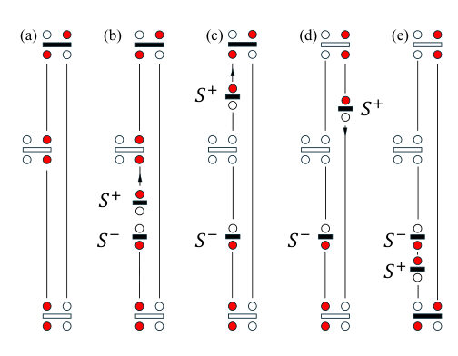
<figcaption class="paper-figure-caption"><b>Fig 1.</b> FIG. 1. The directed-loop update for the XXZ model can be thought of as the insertion of an S+, S−pair of operators at some spacetime point (r0, τ0), and then propagating one of the corresponding defects (the “head”, here S+) through the configuration. Partial SSE configurations are here shown in the linked-vertex representation [1], where spin states be- tween operators are represented by vertical lines; realized as bidirectional links used in coding. (a) A configuration in the space C without defects, with •/◦representing up/down spins, and (black) white rectangles representing (off)-diagonal oper- ators. (b) Construction of a loop is commenced by inserting an S+S−pair on a chosen link....</figcaption>
</figure>
<figure class="paper-figure-card">
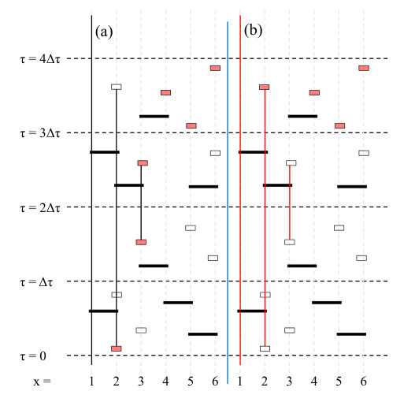
<figcaption class="paper-figure-caption"><b>Fig 2.</b> FIG. 2. Illustration of the TFIM cluster update. Ising oper- ators are represented by black rectangles. White/red rectan- gles represent hI and hσx operators respectively, where the identity operators are present for efficient cluster updates. A single cluster (a) is shown, and the action of flipping the clus- ter (b) is illustrated. Clusters which touch single-site opera- tors flip hI ↔hσx as shown.</figcaption>
</figure>
<figure class="paper-figure-card">
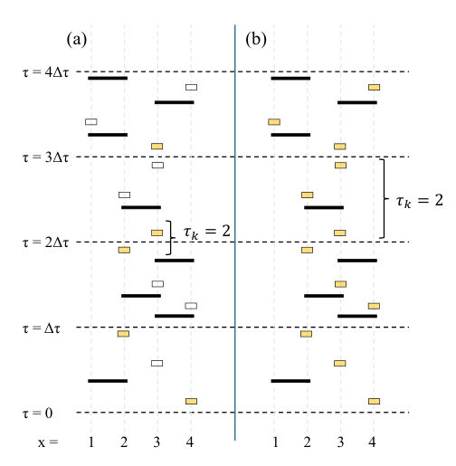
<figcaption class="paper-figure-caption"><b>Fig 3.</b> FIG. 3. Illustration of the off-diagonal estimator for the cor- relation function ⟨σx(r, τ)σx(0, 0)⟩in the TFIM, using the (a) boundary-valued and the (b) time-slice averaged formula- tions. Two-site Ising J operators are denoted by black rect- angles, and do not factor into the measurement procedures. Diagonal single-site operators hI are not shown, and also do not factor into the procedure. Spin-flip operators are denoted by single-site rectangles, where yellow denotes that they con- tribute to the estimator. For the (a) boundary-valued estima- tor, only spin-flip operators directly adjacent to the time-slice boundary contribute. Only a fraction of total operators are used. This method is...</figcaption>
</figure>
<figure class="paper-figure-card">
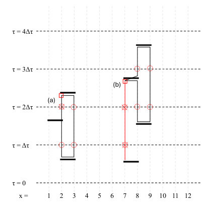
<figcaption class="paper-figure-caption"><b>Fig 4.</b> FIG. 5. In the directed loops algorithm [10], there are two ways that loops can close. Loops begin with choosing a ran- dom vertex leg v0 (□) and moving to the exit leg for that vertex. A loop can close either reconnecting with the origi- nal vertex as (a) an entry leg or (b) an exit leg. Both loops shown above yield valid configurations in the closed space C. For sampling in the extended configuration space C′, only loop closings of type (a) are allowed, as type (b) causes biasing of the estimator. This is due to the method for defining a start- ing point (x0, τ0), which extends back along the leg from v0 (red solid line). Allowing loop closures of type (b) leaves a loop that does not...</figcaption>
</figure>
<figure class="paper-figure-card">
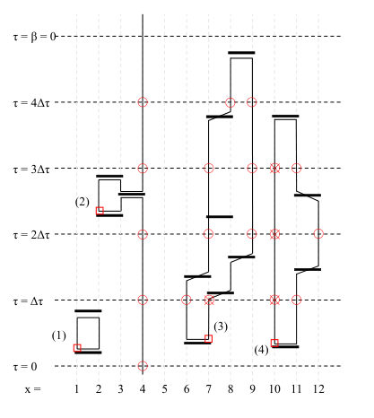
<figcaption class="paper-figure-caption"><b>Fig 5.</b> FIG. 4. Example loops and their contributions to the corre- lator G±(r, τ). represent operators; solid lines are the loop paths; □marks the initial vertex v0; × marks possible τ0 starting points, ⃝mark all contributing boundary points to the histogram in that loop. Loop (1) does not cross any time- slice boundaries, and so does not contribute to the histogram, although we still draw it as a normal MC update. Loop (2) does cross boundaries, but the initial leg chosen does not, and so it does not contribute to the histogram. Loop (3) starts on a link that crosses a single boundary at x0 = 7, τ0 = ∆τ. As we draw the loop, all boundary crossings (⃝) contribute G±[∆r, ∆τk] += nlegs, where nlegs...</figcaption>
</figure>
</div>

<p><strong>Summary.</strong> This work introduces a novel, efficient algorithm within the Stochastic Series Expansion framework to compute imaginary-time correlation functions for both diagonal and off-diagonal operators. By implementing discrete imaginary-time slicing, the method overcomes previous computational bottlenecks associated with measuring non-local correlations in spin models like the TFIM and XXZ chain. This advancement significantly broadens the scope of quantum simulations for strongly correlated matter.</p>
<p><strong>Why it may be interesting.</strong> The ability to efficiently measure off-diagonal correlation functions in strongly correlated spin systems is crucial for understanding quantum phase transitions and excitations (like spinons) that are often masked by diagonal measurements.</p>
<details>
<summary>Detailed structure</summary>
<p><strong>Main problem.</strong> The primary goal is to develop an efficient, general algorithm for calculating imaginary-time correlation functions in Quantum Monte Carlo simulations.</p>
<p><strong>Main result.</strong> The authors present a method using discrete imaginary-time slicing of the SSE operator string that allows for the calculation of both diagonal and off-diagonal correlators with minimal overhead.</p>
<p><strong>Method.</strong> The technique involves splitting the inverse temperature $eta$ into $m$ time slices ($\Delta	au = eta/m$) within the Stochastic Series Expansion (SSE) framework. This slicing enables the direct estimation of correlation functions at discrete imaginary times $ au_k$.</p>
<p><strong>Model / system.</strong> The method is benchmarked on spin systems, specifically the one-dimensional transverse-field Ising model (TFIM) and the XXZ Heisenberg chain. These models are used to test the algorithm's applicability across different types of operators.</p>
<p><strong>Key observables.</strong> Imaginary-time correlation functions ($G(	au)$), including both diagonal and off-diagonal spectral functions, which can be analytically continued to real frequencies.</p>
<p><strong>Important parameters / regimes.</strong> Inverse temperature ($eta$), number of time slices ($m$), system size ($L$), and the specific coupling constants defining the Hamiltonian (e.g., $\Delta$ for XXZ).</p>
<p><strong>Assumptions / limitations.</strong> The method assumes that discretizing imaginary time into $m$ slices provides a representation accurate enough to avoid significant discretization errors, while maintaining the ergodicity of existing cluster update schemes.</p>
<p><strong>Figures summary.</strong> Figures illustrate the implementation details: one shows the directed-loop update for XXZ chains, and another demonstrates the TFIM cluster update mechanism used within the SSE framework.</p>
<p><strong>Paper structure.</strong> The paper first establishes the challenge of calculating off-diagonal correlators in QMC. It then introduces the core technique—time-slicing the SSE operator string—and derives estimators for both diagonal and off-diagonal operators. Finally, it validates this general algorithm on established models like TFIM and XXZ chains.</p>
</details>
<details>
<summary>Abstract</summary>
<p>Combined with numerical analytic continuation techniques, quantum Monte Carlo (QMC) methods enable the extraction of real-frequency dynamical properties from imaginary-time correlation functions. However, the efficient computation of imaginary-time correlation functions by QMC simulations can (depending on the particular model used) be challenging, particularly for operators that are off-diagonal in the computational basis. In this work, we present an efficient and general algorithm within the stochastic series expansion (SSE) framework for evaluating imaginary-time correlation functions of both diagonal and off-diagonal operators. The algorithm builds on a discrete imaginary-time slicing of the SSE operator string, which provides correlation functions on a grid of well-defined imaginary-time points with no discretization error. For off-diagonal operators, we derive estimators that integrate directly into the existing SSE directed-loop or cluster updating schemes, introducing only minimal computational overhead. We benchmark the method on the one-dimensional transverse-field Ising model (sampling with cluster updates) and XXZ spin chain (using directed-loop sampling), demonstrating excellent agreement (with only statistical errors) with exact diagonalization of small systems. We also study larger systems to demonstrate efficiency.</p>
</details>
<p><sub><a href="#top">↑ back to top</a></sub></p>

<p><a id="paper-2608.12625"></a></p>
<h3 id="two-atom-dicke-model-with-atom-atom-interaction"><a href="http://arxiv.org/abs/2608.12625v1">Two-atom Dicke model with atom-atom interaction</a></h3>
<p><strong>Authors:</strong> Lin Jiao, Han Pu<br>
<strong>Type:</strong> theory · <strong>Category:</strong> other · <strong>PDF:</strong> <a href="https://arxiv.org/pdf/2608.12625v1">https://arxiv.org/pdf/2608.12625v1</a><br>
<strong>Analysis basis:</strong> full PDF text, analyzed in chunks
<strong>Topic relevance:</strong> 🔥 <code>Dicke superradiance</code> <strong>5/5</strong> · 🔥 <code>analog quantum simulation</code> <strong>4/5</strong> · 🔥 <code>non-equilibrium universality</code> <strong>4/5</strong> · 🔥 <code>superradiant laser</code> <strong>4/5</strong> · <code>Tavis-Cummings &amp; cavity-many-emitter</code> <strong>3/5</strong> · <code>driven-dissipative phase transition</code> <strong>3/5</strong> · <code>methods for driven-dissipative</code> <strong>3/5</strong> · <code>correlated / nonlocal dissipation</code> <strong>2/5</strong> · <code>Keldysh / 2PI / non-Gaussian methods</code> <strong>1/5</strong> · <code>quantum measurements</code> <strong>1/5</strong></p>
<div class="figure-strip-hint">↔ Scroll figures horizontally</div>
<div class="paper-figures-scroll">
<figure class="paper-figure-card">
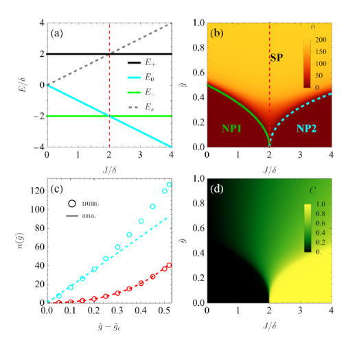
<figcaption class="paper-figure-caption"><b>Fig 1.</b> FIG. 1. (a) Bare spin spectrum of Hspin. (b) Ground-state photon number n = ⟨a†a⟩in the (J/δ, ˜g) parameter space. The green solid and cyan dashed curves are the analytical NP– SP boundaries of Eq. (2). (c) Photon number n at J = 2δ (red) and J = 3δ (cyan). Circles are numerical results and dashed lines the analytical results of Eqs. (S17) and (S21) in the SM [44], respectively. (d) Two-spin concurrence C in the same parameter plane as in (b). Numerical results are obtained by exact diagonalization with ω = 1, δ = 50.</figcaption>
</figure>
<figure class="paper-figure-card">
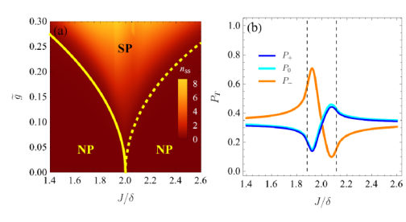
<figcaption class="paper-figure-caption"><b>Fig 2.</b> FIG. 2. (a) Steady-state photon number nss = ⟨a†a⟩ss under cavity photon loss. The yellow solid and dashed curves denote the phase boundaries according to Eq. (5). (b) Steady-state triplet populations Pµ = Tr[(|tµ⟩⟨tµ|⊗Icav)ρss] for µ = +, 0, − along representative cut of ˜g =0.12 are denoted by the blue, cyan, and orange curves, respectively. The vertical black dashed lines mark the phase boundaries. We set ω = 1, δ = 50, κ = 0.1.</figcaption>
</figure>
<figure class="paper-figure-card">
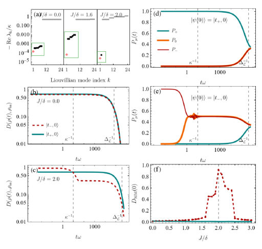
<figcaption class="paper-figure-caption"><b>Fig 3.</b> FIG. 3. (a) Liouvillian eigenvalues −Re(λk)/κ for J/δ = 0, 1.6, and 2. The slow modes satisfying |Re(λk)| ≪κ and forming the metastable manifold are indicated by green boxes. (b) Evolution of the normalized trace-distance D(t) = Dtr[ρ(t), ρss]/Dtr[ρ(0), ρss] between the instantaneous and the steady-state density matrices for J/δ = 0 starting from two different initial states |t+, 0⟩(solid line) and |t−, 0⟩(dashed line). The vertical dashed lines indicate the cavity-loss time κ−1 and the slow Liouvillian time ∆−1 L . (c) Same as (b) for J/δ = 2. (d) Evolution of the triplet population Pµ(t) start- ing from the initial states |t+, 0⟩for J/δ = 2. (e) Same as (d) but from the initial state |t−,...</figcaption>
</figure>
<figure class="paper-figure-card">
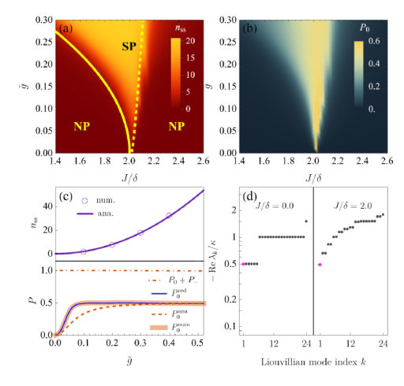
<figcaption class="paper-figure-caption"><b>Fig 4.</b> FIG. 4. (a) Steady-state photon number nss = ⟨a†a⟩ss of the full model. The yellow lines are the analytic phase boundaries from the reduced model. (b) Steady-state population P0. (c) Steady-state photon number (upper) and atomic populations (lower) at J = 2δ. The upper panel compares the analytical result in Eq. (11) (purple solid) with the full model numerical results (open circles). The lower panel shows P0 from the full- Liouvillian numerical (thick pale orange), reduced-Liouvillian (thin blue), and analytical (orange dashed) results; the dot- dashed curve denotes P0 + P−. (d) Spectrum of the full- Liouvillian −Re(λk)/κ at ˜g = 0.12 for J/δ = 0 and 2. We set ω = 1, δ = 50, κ = 0.1, γ↓=...</figcaption>
</figure>
</div>

<p><strong>Summary.</strong> This paper analyzes the two-atom Dicke model to study how internal atomic interactions modify superradiant phase transitions. By incorporating dissipation and analyzing the Liouvillian spectrum, the authors demonstrate that these interactions can fundamentally alter critical thresholds and change the universality class of the transition. The results highlight the tunability of collective quantum phenomena through engineered coupling terms.</p>
<p><strong>Why it may be interesting.</strong> This work provides a detailed theoretical framework for controlling collective light-matter interactions in cavity QED systems by engineering atom-atom coupling, which is crucial for designing quantum memories or nonlinear optical devices.</p>
<details>
<summary>Detailed structure</summary>
<p><strong>Main problem.</strong> The study investigates how atom-atom interactions modify superradiant criticality in a minimal cavity QED model, particularly concerning phase boundaries and the universality class of the transition.</p>
<p><strong>Main result.</strong> Interaction terms can suppress the superradiance threshold entirely, causing the critical coupling strength to vanish at specific interaction ratios (e.g., $J=2\delta$), and changing the critical scaling exponent from $\gamma=1$ to $\gamma=2$.</p>
<p><strong>Method.</strong> The analysis employs both analytical techniques like perturbation theory for phase boundaries and numerical methods involving solving the Liouvillian spectrum and analyzing relaxation dynamics via the Master equation.</p>
<p><strong>Model / system.</strong> The system is a Dicke model consisting of two interacting two-level atoms coupled to a single cavity mode. The physics is governed by a Hamiltonian analyzed through a Master equation that includes terms for photon loss ($\kappa$) and local spin relaxation ($\gamma_{\downarrow}$).</p>
<p><strong>Key observables.</strong> Critical coupling strength ($  ilde{g}<em ss>c$), steady-state photon number ($n</em>$), two-spin concurrence ($C$), Liouvillian gap ($\Delta_L$), and the scaling exponent ($\gamma$).</p>
<p><strong>Important parameters / regimes.</strong> Atom-atom interaction strength ($J$), cavity frequency ($\omega$), coupling constant ($g$), dissipation rates ($\kappa, \gamma_{\downarrow}$), and the ratio $J/\delta$.</p>
<p><strong>Assumptions / limitations.</strong> The analysis often involves projecting onto reduced subspaces (e.g., ignoring the singlet state) or utilizing approximations like the classical oscillator limit for analytical tractability.</p>
<p><strong>Figures summary.</strong> Figures illustrate the bare spin spectrum, phase boundaries in the $(	ilde{g}/J/\delta)$ plane showing Normal/Superradiant phases, and the evolution of photon number and populations under cavity loss, alongside plots of Liouvillian eigenvalues.</p>
<p><strong>Paper structure.</strong> The paper progresses from establishing the minimal model Hamiltonian to analyzing the closed-system phase transitions using perturbation theory. It then extends the analysis to include dissipation via the Master equation, examining steady states, relaxation dynamics (Liouvillian spectrum), and finally deriving stability criteria for different interaction regimes.</p>
</details>
<details>
<summary>Abstract</summary>
<p>Interactions among emitters provide a powerful means of controlling collective light--matter phenomena, yet their role in superradiant criticality has not been thoroughly investigated. Here we construct a minimal model that can yield analytical insights --- a Dicke model with two interacting atoms coupled to a single mode cavity --- to study such interaction effects. We show that interaction changes the phase boundary, and may even completely suppress the atom-photon coupling threshold for superradiance and change the universality class of the phase transition. We further study the dissipative phase transition and quantum dynamics in the presence of dissipation channels such as photon loss and spin relaxation. Our results demonstrate important roles played by the atom-atom interaction and how it can be engineered to control atom-photon coupling.</p>
</details>
<p><sub><a href="#top">↑ back to top</a></sub></p>

<p><a id="paper-2608.13218"></a></p>
<h3 id="heterogeneously-integrated-squeezed-light-generation-and-detection-on-a-single-photonic-chip"><a href="http://arxiv.org/abs/2608.13218v1">Heterogeneously Integrated Squeezed-Light Generation and Detection on a Single Photonic Chip</a></h3>
<p><strong>Authors:</strong> Haoran Chen, Benjamin Westcott, Fatemehsadat Tabatabaei, Xiangwen Guo, Shuman Sun, Zijiao Yang, Gedalia Y. Koehler, Beichen Wang, Shadrach Sarpong, Steven Bowers, Olivier Pfister, Andreas Beling, Xu Yi<br>
<strong>Type:</strong> experiment · <strong>Category:</strong> quantum information and computing · <strong>PDF:</strong> <a href="https://arxiv.org/pdf/2608.13218v1">https://arxiv.org/pdf/2608.13218v1</a><br>
<strong>Analysis basis:</strong> full PDF text, analyzed in chunks
<strong>Topic relevance:</strong> 🔥 <code>quantum optics experiment</code> <strong>5/5</strong> · 🔥 <code>QC/QI experiment</code> <strong>4/5</strong> · <code>quantum measurements</code> <strong>3/5</strong> · <code>analog quantum simulation</code> <strong>2/5</strong> · <code>driven-dissipative phase transition</code> <strong>1/5</strong> · <code>interference shaping light</code> <strong>1/5</strong></p>
<div class="figure-strip-hint">↔ Scroll figures horizontally</div>
<div class="paper-figures-scroll">
<figure class="paper-figure-card">
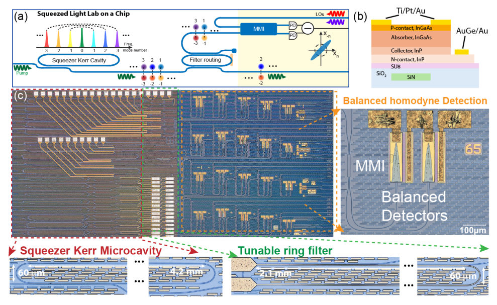
<figcaption class="paper-figure-caption"><b>Fig 1.</b> FIG. 1: Architecture and building blocks of the heterogeneous integrated squeezed-light generation and detection on a photonic chip. (a) Illustration of the heterogeneous quantum photonic integrated circuit. The quantum light source is a squeezed quantum microcomb generated in a SiN optical microcavity through Kerr nonlinearity. The squeezer is followed by a tunable ring filter to route the odd-number quantum modes (qumodes) to the balanced homodyne detection (BHD). The routed odd number qumodes are then combined with local os- cillator on a 50/50 multimode interferometry (MMI) coupler, and detected on a pair of balanced MUTC photo- diodes heterogeneously integrated on the SiN QPIC. (b)...</figcaption>
</figure>
<figure class="paper-figure-card">
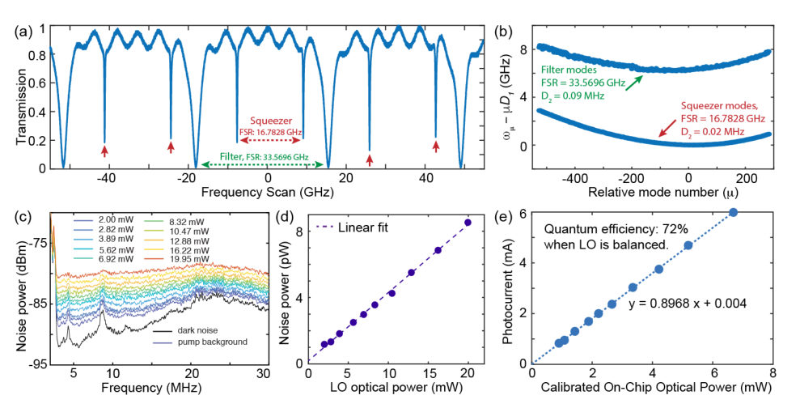
<figcaption class="paper-figure-caption"><b>Fig 2.</b> FIG. 2: Characterization of components in the squeezed-light generation and detection chip. (a) Transmission spectrum of the squeezer and the tunable filter. The filter frequencies can be tuned by an integrated heater to align with the resonance frequencies of the squeezer. (b) Mode spectrum of the squeezer cavity and the tunable filter cavity. The FSR of the filter cavity matches twice of the squeezer cavity FSR within 4 MHz differ- ence. (c) Noise spectrum of the BHD at different LO optical power levels. (d) The noise power increase linearly with the LO optical power, validating the BHD is shot noise limited. (e) Total quantum efficiency measurement of the filter, MMI coupler and balanced...</figcaption>
</figure>
<figure class="paper-figure-card">
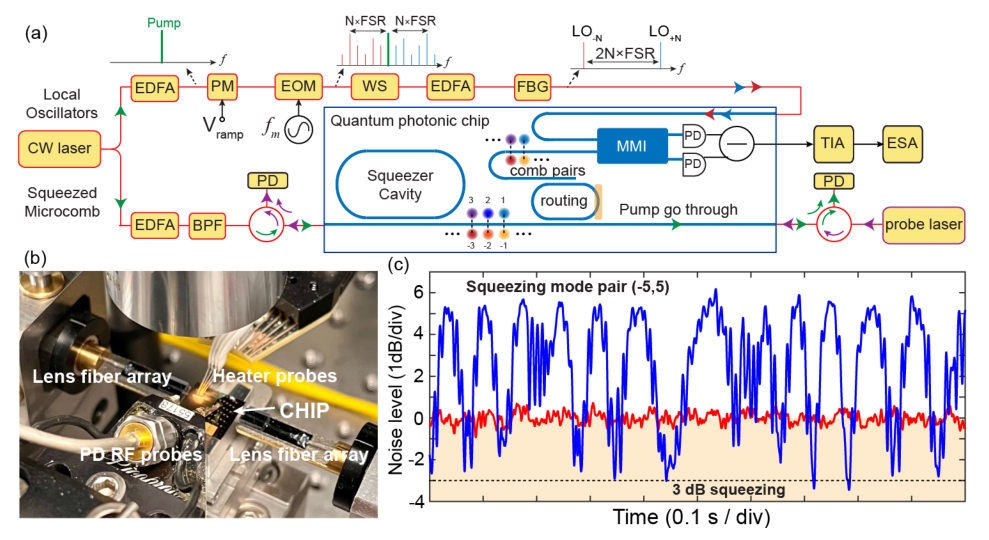
<figcaption class="paper-figure-caption"><b>Fig 3.</b> FIG. 3: Experimental setup and squeezing measurement. (a) Experimental setup. The pump laser and the local oscillators are created off-chip and coupled into the squeezed light chip through lens fiber array. The bichro- matic LOs are created using electro-optics modulation and a line-by-line programmable waveshaper (WS) filter. A probe laser is coupled into the chip from the opposite direction to monitor the frequency alignment of the squeezer and the tunable filter. A low bandwidth DC probe is used to control the integrated heater on the ring filter, and an RF probe is used to bias the integrated photodiodes and read-out the photocurrents. (b) Image of the squeezed light generation and...</figcaption>
</figure>
<figure class="paper-figure-card">
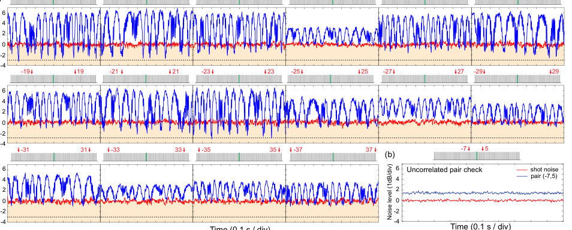
<figcaption class="paper-figure-caption"><b>Fig 4.</b> FIG. 4: Squeezed quantum microcomb generation and measurement on the heterogeneously inte- grated chip. (a) Quadrature noise variances (blue) relative to shot noise (red) of odd number qumodes from (-7,7) to (-37,37). The qumodes measured are marked by the red arrows. The regime below the shot noise limit is colored in orange, and a dashed black line indicates 3 dB below the shot noise level. Qumodes are selected in mea- surements by tuning the frequency of the LOs to align with the target qumodes. (b) Quantum correlation check: noise variances show no quantum correlation between uncorrelated comb pairs for qumodes (-7,5).</figcaption>
</figure>
</div>

<p><strong>Summary.</strong> The research presents an experimental demonstration of integrating squeezed-light generation and detection onto one photonic chip using heterogeneous integration. By overcoming material conflicts between low-loss transmission and high-absorption detection, the authors achieved 3 dB squeezing with a high total quantum efficiency. This establishes a scalable platform for advanced quantum photonic applications.</p>
<p><strong>Why it may be interesting.</strong> This work directly addresses hardware bottlenecks in quantum optics by demonstrating a fully integrated platform for continuous-variable quantum state generation and measurement, which is crucial for scalable quantum networking and computation.</p>
<details>
<summary>Detailed structure</summary>
<p><strong>Main problem.</strong> Integrating squeezed-light generation and photodetection on a single photonic chip is challenging due to conflicting material requirements: low loss for quantum correlations versus efficient absorption for detection.</p>
<p><strong>Main result.</strong> The authors successfully demonstrated a scalable architecture by integrating all three stages (generation, routing, and detection) on one chip, achieving measurable 3 dB squeezing with low overall circuit loss.</p>
<p><strong>Method.</strong> They used heterogeneous integration to combine components like Kerr microcavities for squeezing, tunable filters for routing, and modified uni-traveling carrier photodiodes for balanced homodyne detection.</p>
<p><strong>Model / system.</strong> The system is a single photonic chip built on SiN, incorporating an Optical Parametric Oscillator (OPO) pumped by a continuous wave laser to generate two-mode squeezed light. Detection relies on heterogeneously integrated MUTC photodiodes.</p>
<p><strong>Key observables.</strong> Squeezing level ($\approx 3 	ext{ dB}$), total quantum efficiency ($72\%$), and quadrature noise variances relative to shot noise.</p>
<p><strong>Important parameters / regimes.</strong> Total optical loss of $1.1 	ext{ dB}$ post-squeezer, pump power near OPO threshold, and the measured MMI splitting ratio ($46/54$ vs designed).</p>
<p><strong>Assumptions / limitations.</strong> The primary limitation noted is that squeezing level is limited by component non-idealities like squeezer escape efficiency and residual loss.</p>
<p><strong>Figures summary.</strong> Figures show architectural diagrams, sideviews of photodiodes, characterization spectra (transmission/mode), noise spectrum validation confirming sub-shot-noise operation, and total quantum efficiency measurements.</p>
<p><strong>Paper structure.</strong> The paper details the architecture, presents component characterizations (loss, QE), demonstrates the measurement of quadrature noise variances to quantify squeezing below the shot noise limit, and discusses the scalability of the integrated platform.</p>
</details>
<details>
<summary>Abstract</summary>
<p>Squeezed light underpins quantum-enhanced sensing and continuous-variable quantum information processing, and integrated photonics offers a route to producing it at scale. Universal to these applications are squeezed-light generation and measurement. Importantly, quantum measurements serve not only as readout but also as active operations in quantum-state evolution. However, integrating squeezed-light generation and photodetection on the same photonic chip has remained challenging because they impose fundamentally conflicting material requirements: low optical loss to preserve quantum correlations, but efficient photon absorption for photodetection. Here, we demonstrate squeezed-light generation, routing, and balanced homodyne detection integrated on a single photonic chip through heterogeneous integration. A two-mode squeezed quantum microcomb comprising 34 quantum modes is measured with approximately 3 dB squeezing. Our work establishes a scalable architecture for fully integrated squeezed-light quantum photonic systems, unifying quantum-state generation, processing, and detection on a single chip.</p>
</details>
<p><sub><a href="#top">↑ back to top</a></sub></p>

<p><a id="paper-2608.12938"></a></p>
<h3 id="encoding-circuit-satisfiability-in-rydberg-atom-arrays"><a href="http://arxiv.org/abs/2608.12938v1">Encoding Circuit Satisfiability in Rydberg Atom Arrays</a></h3>
<p><strong>Authors:</strong> Haotian Ji, Zhangjie Qin, Zheng An, Bowen Yan, Daoheng Niu, Kunzhe Dai, Jingkai Fang, Dongyang Cao, Jiangyu Cui<br>
<strong>Type:</strong> both · <strong>Category:</strong> other · <strong>PDF:</strong> <a href="https://arxiv.org/pdf/2608.12938v1">https://arxiv.org/pdf/2608.12938v1</a><br>
<strong>Analysis basis:</strong> full PDF text, analyzed in chunks
<strong>Topic relevance:</strong> 🔥 <code>Rydberg arrays</code> <strong>5/5</strong> · 🔥 <code>analog quantum simulation</code> <strong>4/5</strong> · <code>QC/QI experiment</code> <strong>2/5</strong> · <code>quantum measurements</code> <strong>1/5</strong></p>
<div class="figure-strip-hint">↔ Scroll figures horizontally</div>
<div class="paper-figures-scroll">
<figure class="paper-figure-card">
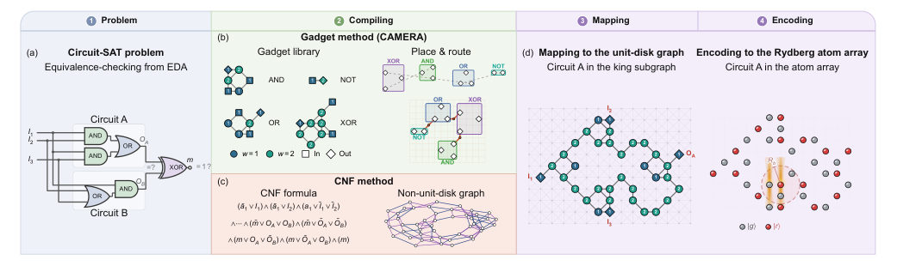
<figcaption class="paper-figure-caption"><b>Fig 1.</b> FIG. 1. Overview of the encoding framework, from an electronic-design consistency check to a Rydberg native MWIS problem. The gadget-based route of this work (CAMERA) runs (a) →(b) →(d); the conventional CNF route, (a) →(c). (a) The input: combinational equivalence checking by a miter. Two structurally different circuits A and B share the inputs I1, I2, I3 and have their outputs compared by an XOR gate, whose output m = OA ⊕OB satisfies m = 1 ⇔A ̸= B. (b) The gadget method of this work. Left, the weighted KSG gadget library: one gadget per Boolean primitive, whose MWIS configurations reproduce the gate truth table. Color encodes the on-site weight w ∈{1, 2}, realized as a local detuning....</figcaption>
</figure>
<figure class="paper-figure-card">
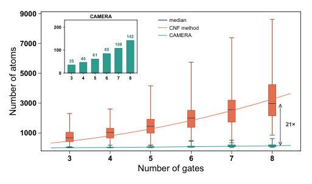
<figcaption class="paper-figure-caption"><b>Fig 2.</b> FIG. 2. Atom cost of the conventional CNF route (red) and the direct gadget route (CAMERA, teal) on random bench- mark circuits of g = 3–8 gates (100 random circuits per gate count on each route). For each gate count, the thin vertical line spans the full min–max range, the box the interquartile range, and the dark slate tick marks the median. The curves are pure quadratics atoms = n g2 fitted through the medians, and the double-headed arrow marks the 21× median suppres- sion at g = 8. Inset: atom count of the median CAMERA instance at each gate count.</figcaption>
</figure>
<figure class="paper-figure-card">
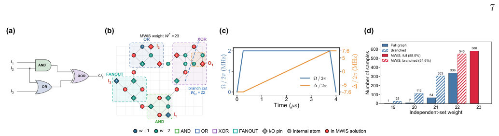
<figcaption class="paper-figure-caption"><b>Fig 3.</b> FIG. 3. End-to-end compilation and solution of the multi-gate Circuit-SAT instance C(I1, I2, I3) = (I1 ∧I2) ⊕(I2 ∨I3). (a) A three-gate circuit combining AND, OR, and XOR, with output O1. (b) The compiled 30-atom weighted king subgraph: colored dashed boxes outline the four gadgets (AND, OR, XOR, FANOUT), node color encodes the on-site weight w ∈{1, 2}, and diamonds mark the pin atoms, with the ports I1, I2, I3, O1 labeled in red. Red fill marks one of the eight degenerate MWIS optima (W ⋆= 23), encoding the input row (I1, I2, I3) = (0, 0, 1) with O1 = 1. The orange frame and blue dashed cut mark the output branching that asserts O1 = 1: deleting the three framed atoms leaves the 27-atom...</figcaption>
</figure>
<figure class="paper-figure-card">
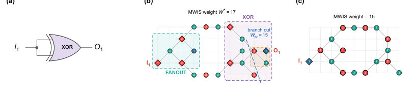
<figcaption class="paper-figure-caption"><b>Fig 4.</b> FIG. 4. Detecting unsatisfiability from the compiled king subgraph, for the minimal unsatisfiable instance O1 = I1 ⊕I1. (a) Logical circuit: the single input I1 is fanned out into both ports of an XOR gate, so O1 is identically 0 and the demand O1 = 1 is unsatisfiable. (b) The compiled 20-atom weighted KSG: dashed boxes outline the FANOUT and XOR gadgets, node color encodes the on-site weight w ∈{1, 2}, diamonds mark the pin atoms, and the ports I1, O1 are labeled in red. Red fill marks one of the two degenerate MWIS optima (W ⋆= 17); every optimum reads O1 = 0. The orange frame and blue dashed cut mark the output branching that asserts O1 = 1: deleting the three framed atoms leaves the...</figcaption>
</figure>
<figure class="paper-figure-card">
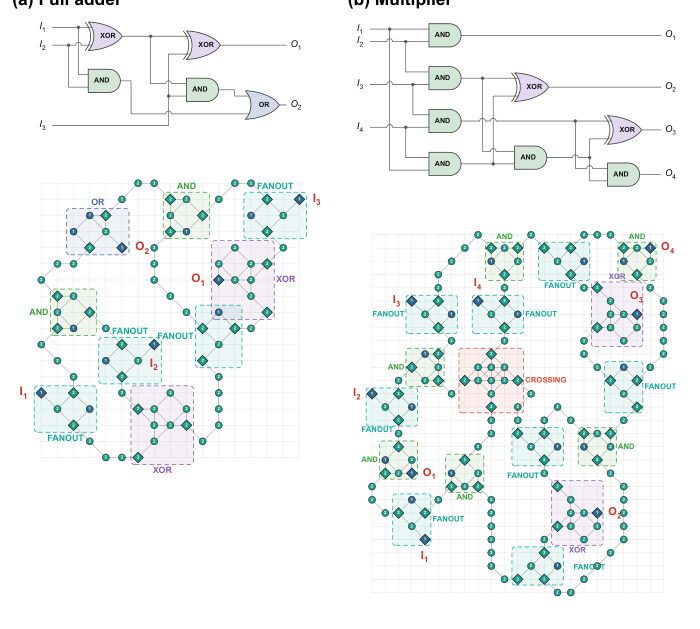
<figcaption class="paper-figure-caption"><b>Fig 5.</b> FIG. 5. Compilation of multi gate arithmetic blocks into weighted king subgraphs by the automated pipeline. (a) One-bit full adder: logical circuit (top) and compiled 85-atom weighted KSG (bottom). Dashed boxes outline the constituent XOR, AND, OR, and fanout gadgets; diamonds mark the gadget I/O pin atoms, circles the internal and wire atoms; node color encodes the on-site weight w ∈{1, 2} printed on each atom; and the ports I1–I3, O1, O2 appear as labeled boundary atoms. The eight degenerate maximum weight independent sets (weight W ⋆= 73) enumerate the full adder truth table. (b) Two-bit multiplier: logical circuit (top) and compiled 165-atom weighted KSG (bottom), with the same...</figcaption>
</figure>
</div>

<p><strong>Summary.</strong> The paper presents CAMERA, a novel method to encode Circuit-SAT into an MWIS problem on Rydberg atom arrays using compact logic gadgets. By avoiding the massive overhead of CNF representations, it drastically reduces the required number of atoms while demonstrating end-to-end simulation capability for complex arithmetic circuits.</p>
<p><strong>Why it may be interesting.</strong> This work provides a concrete, resource-aware blueprint for mapping abstract computational problems onto the physical constraints of Rydberg arrays, directly addressing scalability issues inherent in previous encoding schemes.</p>
<details>
<summary>Detailed structure</summary>
<p><strong>Main problem.</strong> The primary goal is to encode the NP-complete Boolean Circuit Satisfiability problem (Circuit-SAT) onto a physical quantum hardware platform.</p>
<p><strong>Main result.</strong> A novel, atom-efficient encoding method called CAMERA was introduced, which reduces the required number of atoms for Circuit-SAT by an average factor of 22.4 compared to conventional CNF encodings.</p>
<p><strong>Method.</strong> The authors developed a gadget-based approach that maps logic gates directly into weighted gadgets on the king subgraph geometry of Rydberg arrays, bypassing the overhead associated with Conjunctive Normal Form (CNF) representations.</p>
<p><strong>Model / system.</strong> The physical platform is Rydberg atom arrays, which naturally encode the Maximum-Weight Independent Set (MWIS) problem via the blockade mechanism. The system's Hamiltonian governs interactions that restrict excitations to independent sets on a graph structure like the king subgraph.</p>
<p><strong>Key observables.</strong> Maximum Weight ($W^\star$) of the MWIS, which corresponds to circuit functionality; port occupations read out from the ground state solution.</p>
<p><strong>Important parameters / regimes.</strong> The atom cost reduction factor ($\approx 22.4$); the blockade radius ($R_b$); and the weights assigned to gadgets (e.g., $\{1, 2\}$).</p>
<p><strong>Assumptions / limitations.</strong> The work establishes a proof of principle for the complete encoding and simulation workflow; verification relies on exact classical ground state calculations (dynamic programming) for small instances.</p>
<p><strong>Figures summary.</strong> Figures illustrate the workflow from circuit check to gadget assembly and final mapping onto the array. Specific tables summarize the MWIS weights achieved for verifying arithmetic blocks like the full adder ($W^\star=73$) and two-bit multiplier ($W^\star=142$).</p>
<p><strong>Paper structure.</strong> The paper first introduces the problem (Circuit-SAT $
ightarrow$ MWIS) and the limitations of CNF encoding. It then details CAMERA, presenting the gadget construction and VLSI-inspired compilation. The core is validation through compiling and solving increasingly complex circuits: three-gate circuit $
ightarrow$ full adder $
ightarrow$ two-bit multiplier, culminating in an end-to-end simulation.</p>
</details>
<details>
<summary>Abstract</summary>
<p>Rydberg atom arrays natively encode the maximum-weight independent set (MWIS) problem through the blockade mechanism, so the Boolean circuit satisfiability problem (Circuit-SAT) can be brought onto the platform once it is reduced to MWIS. The conventional encoding of Circuit-SAT in the Rydberg atom array proceeds through conjunctive normal form (CNF) and incurs a substantial atom overhead. We introduce CAMERA (Circuit-SAT Atom-efficient MWIS Encoding for Rydberg Arrays), a method that provides MWIS encodings of Circuit-SAT instances on the king subgraph geometry of the array. CAMERA represents each logic gate as a compact weighted gadget and assembles the gadgets with a placement and routing compiler inspired by very large scale integration (VLSI) design. On random multi-gate benchmarks, the direct encoding route lowers the atom cost relative to the CNF route by an average factor of $22.4 \pm 1.8$. To demonstrate that the encoding extends from individual weighted gadgets to multi-gate arithmetic blocks, we compile a full adder and a multiplier, verifying each against its complete truth table by exact classical ground state calculations. We further showcase solving a representative Circuit-SAT instance end-to-end, from gate level compilation through a closed-system tensor-network simulation of a hardware-compatible annealing protocol on the encoded 30-atom instance to readout of a satisfying assignment. These results establish a complete encoding and simulation workflow as a proof of principle, and a concrete route toward solving a broader family of combinatorial problems on Rydberg atom arrays.</p>
</details>
<p><sub><a href="#top">↑ back to top</a></sub></p>

<p><a id="paper-2608.12809"></a></p>
<h3 id="sector-resolved-non-bloch-topology-and-nonlocal-entanglement-dynamics-in-a-bond-dissipative-kitaev-chain"><a href="http://arxiv.org/abs/2608.12809v1">Sector-resolved non-Bloch topology and nonlocal entanglement dynamics in a bond-dissipative Kitaev chain</a></h3>
<p><strong>Authors:</strong> Shaina Gandhi, Koustav Roy, Bilal Tanatar, Saurabh Basu<br>
<strong>Type:</strong> theory · <strong>Category:</strong> other · <strong>PDF:</strong> <a href="https://arxiv.org/pdf/2608.12809v1">https://arxiv.org/pdf/2608.12809v1</a><br>
<strong>Analysis basis:</strong> full PDF text, analyzed in chunks
<strong>Topic relevance:</strong> 🔥 <code>driven-dissipative phase transition</code> <strong>4/5</strong> · 🔥 <code>methods for driven-dissipative</code> <strong>4/5</strong> · <code>Keldysh / 2PI / non-Gaussian methods</code> <strong>3/5</strong> · <code>analog quantum simulation</code> <strong>3/5</strong> · <code>correlated / nonlocal dissipation</code> <strong>3/5</strong> · <code>non-equilibrium universality</code> <strong>2/5</strong> · <code>quantum measurements</code> <strong>1/5</strong> · <code>scars &amp; prethermalization</code> <strong>1/5</strong></p>
<div class="figure-strip-hint">↔ Scroll figures horizontally</div>
<div class="paper-figures-scroll">
<figure class="paper-figure-card">
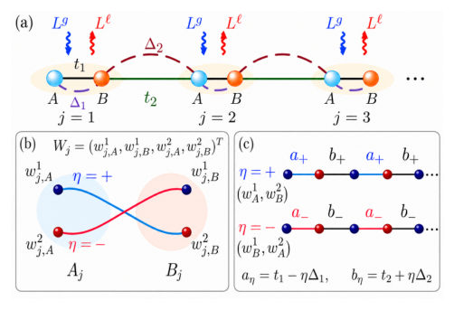
<figcaption class="paper-figure-caption"><b>Fig 1.</b> FIG. 1. Schematic of the bond-dissipative dimerized Kitaev chain and its Majorana-sector decomposition. (a) Real-space chain with sublattices A and B in each unit cell. Solid bonds denote hoppings t1 = t(1 + d), t2 = t(1 −d), dashed bonds represent the pairings ∆1 = ∆(1−d), ∆2 = ∆(1+d), and each unit cell couples to a Markovian bath through the bond loss and gain jump operators Lℓ j and Lg j. (b) Local Majorana basis and sector split at µ = 0, with sector 1−4 spanned by (w1 A, w2 B) and sector 2−3 by (w1 B, w2 A). (c) The sectors map to SSH-like Majorana chains with effective couplings aη = t1 −η∆1 and bη = t2 + η∆2.</figcaption>
</figure>
<figure class="paper-figure-card">
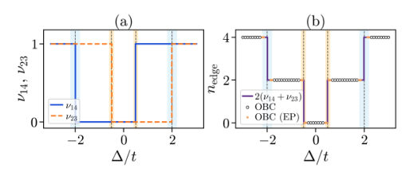
<figcaption class="paper-figure-caption"><b>Fig 2.</b> FIG. 2. (a) Non-Bloch winding numbers ν14 and ν23 as functions of ∆/t. (b) Number of isolated edge rapidities in the finite OBC rapidity spectrum. The purple line shows the sector-resolved prediction 2(ν14 + ν23) from Eq. (11), while symbols are obtained by direct diagonalization of XOBC. Open circles denote OBC counts away from the shaded real- gapless windows, and filled orange circles denote counts eval- uated inside those windows. The shaded regions mark the PBC real-gapless windows bounded by exceptional points, and the vertical dashed lines indicate the Hermitian critical values ∆/t = ±d and ∆/t = ±1/d. Parameters are t = 1, d = 0.5, µ = 0, and γℓ= γg = 0.2.</figcaption>
</figure>
<figure class="paper-figure-card">
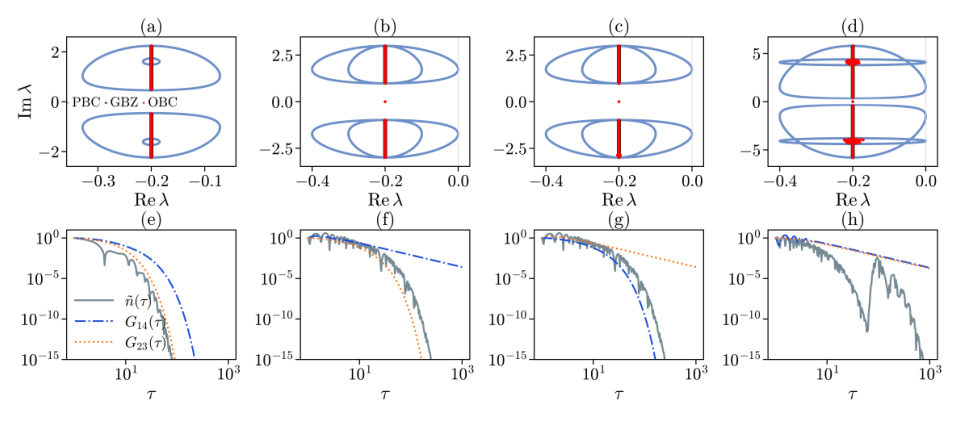
<figcaption class="paper-figure-caption"><b>Fig 3.</b> FIG. 3. Sector-resolved rapidity spectra and PBC damping. (a)–(d) Damping-plane spectra λ = iβ, showing PBC Bloch bands, sector-GBZ continua, and finite-chain OBC rapidities. (e)–(h) Normalized root-mean-square amplitudes en(τ), G14(τ), and G23(τ). Columns correspond to ∆/t = 0.25, 1, −1, and 2.5, representing the trivial, 1ab, 1ba, and SSH-like regimes. Only probes overlapping a gapless PBC sector show algebraic damping; the cross-sector density need not. Parameters are t = 1, d = 0.5, µ = 0, and γℓ= γg = 0.2.</figcaption>
</figure>
<figure class="paper-figure-card">
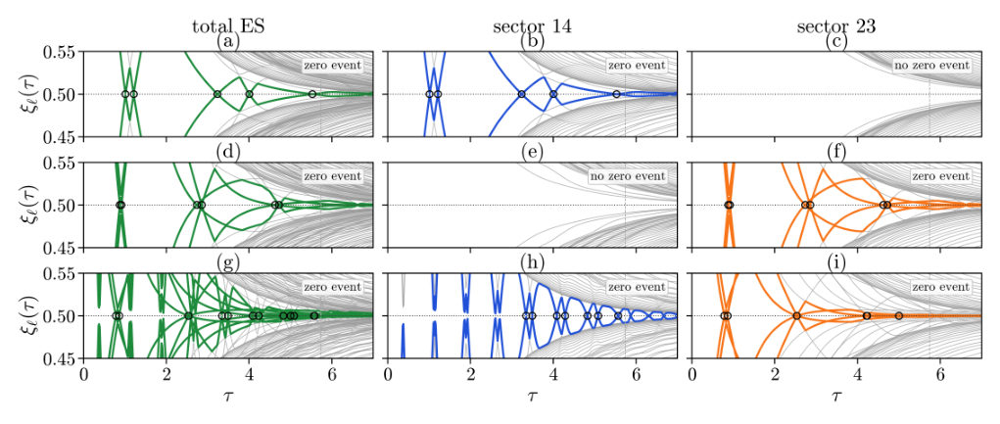
<figcaption class="paper-figure-caption"><b>Fig 4.</b> FIG. 4. Entanglement-spectrum dynamics under PBC after dissipative quenches from a trivial Hermitian initial state at ∆i/t = 0.25. Rows correspond to post-quench values ∆/t = 1, −1, and 2.5, with sector windings (ν14, ν23) = (1, 0), (0, 1), and (1, 1). Columns show the total ES and the sector-restricted covariance ES diagnostics for sectors 1−4 and 2−3. Plotted are the entanglement occupations ξℓ(τ), with ξℓ= 1/2 marking an entanglement zero mode. Colored curves highlight branches participating in finite-time zero events, gray curves represent the remaining branches, and open circles mark zero events. Parameters are t = 1, d = 0.5, µ = 0, γℓ= γg = 0.2, N = 200, and NS = 100.</figcaption>
</figure>
</div>

<p><strong>Summary.</strong> The paper investigates how topology behaves in dissipative superconducting chains by analyzing the Kitaev model under Lindblad dynamics. It reveals that while local measurements can be 'sector-blind' due to cross-talk between Majorana sectors, nonlocal diagnostics like the entanglement spectrum zero events successfully reveal the underlying, hidden open-boundary topological structure.</p>
<p><strong>Why it may be interesting.</strong> This work bridges non-Hermitian physics (dissipation) with topological invariants and entanglement measures, providing advanced diagnostics for open quantum systems where standard bulk-boundary correspondence fails. This is highly relevant to AMO/open system research.</p>
<details>
<summary>Detailed structure</summary>
<p><strong>Main problem.</strong> The study investigates how non-Bloch topology manifests and breaks down in dissipative topological superconductors, particularly when multiple Majorana sectors are present.</p>
<p><strong>Main result.</strong> The system exhibits a sector-resolved non-Bloch bulk-boundary correspondence at zero chemical potential, which is masked by local observables due to cross-sector covariance. This hidden edge content can be recovered dynamically via finite-time zero events in the entanglement spectrum.</p>
<p><strong>Method.</strong> The analysis employs third quantization on a bond-dissipative Kitaev chain, analyzing the Liouvillian spectrum and utilizing the spatial entanglement spectrum (ES) dynamics under quenches.</p>
<p><strong>Model / system.</strong> The model is a bond-dissipative dimerized Kitaev chain governed by a Lindblad master equation. The Hamiltonian includes hopping terms ($t_{1a}, t_{2b}$) and onsite potentials, alongside dissipation rates ($\gamma_\ell, \gamma_g$).</p>
<p><strong>Key observables.</strong> Non-Bloch winding numbers ($
u$), local density relaxation (cross-sector covariance), and finite-time zero events in the entanglement spectrum ($\xi_\ell = 1/2$).</p>
<p><strong>Important parameters / regimes.</strong> Zero chemical potential ($\mu=0$) is crucial for sector separation; finite $\mu$ causes hybridization. The ratio of hopping parameters ($\Delta/t$) controls the topological regime.</p>
<p><strong>Assumptions / limitations.</strong> The exact sector decomposition into two independent non-Hermitian sectors is only valid at $\mu=0$. For $\mu 
eq 0$, the analysis must use the full rapidity matrix due to hybridization.</p>
<p><strong>Figures summary.</strong> Figures illustrate the schematic of the chain structure and sector split ($\mu=0$), map out non-Bloch winding numbers vs. coupling ratios, show observable selection rules (e.g., $ ext{G}_{14}$ decay), and demonstrate ES zero events signaling hidden OBC topology.</p>
<p><strong>Paper structure.</strong> The paper first establishes the general framework of dissipative non-Hermitian topology. It then analyzes the specific case at $\mu=0$ to reveal sector-resolved diagnostics. Finally, it extends the analysis to finite chemical potential ($\mu 
eq 0$), showing how hybridization complicates the simple sector separation but that total ES dynamics remain a robust diagnostic tool.</p>
</details>
<details>
<summary>Abstract</summary>
<p>A core characteristic of dissipative non-Hermitian topology is that the relaxation dynamics tracks the non-Bloch bulk-boundary correspondence, rendering an algebraic decay in the gapless regime and an exponential falloff in the gapped phase, so that local observables directly diagnose the topology. We show that this correspondence breaks down in a dissipative topological superconductor, where the local observables turn blind to the very topology they are expected to decipher. Via a bond-dissipative dimerized Kitaev chain in a third-quantized rapidity-matrix formulation, we find that at zero chemical potential the Majorana rapidity matrix decomposes into two independent non-Hermitian sectors, each with its own generalized Brillouin zone and non-Bloch winding number, thereby revealing a sector-resolved non-Bloch bulk-boundary correspondence. The local density is a cross-sector covariance and relaxes at the sum of the two sector rates, so it remains sector-blind even when one sector is gapless and topological. For balanced gain and loss, the finite-time zero events of the entanglement spectrum under purely periodic-boundary Lindblad evolution recover this hidden edge content sector by sector, serving as a dynamical invariant that returns the open-boundary edge rapidities without physically opening the chain.</p>
</details>
<p><sub><a href="#top">↑ back to top</a></sub></p>

<p><a id="paper-2608.12475"></a></p>
<h3 id="exceptional-activated-mode-theory-for-generalized-real-complex-transitions"><a href="http://arxiv.org/abs/2608.12475v1">Exceptional activated mode theory for generalized real-complex transitions</a></h3>
<p><strong>Authors:</strong> Mengjie Yang, Alexander N. Poddubny, Ching Hua Lee<br>
<strong>Type:</strong> theory · <strong>Category:</strong> other · <strong>PDF:</strong> <a href="https://arxiv.org/pdf/2608.12475v1">https://arxiv.org/pdf/2608.12475v1</a><br>
<strong>Analysis basis:</strong> full PDF text, analyzed in chunks
<strong>Topic relevance:</strong> 🔥 <code>driven-dissipative phase transition</code> <strong>4/5</strong> · <code>Keldysh / 2PI / non-Gaussian methods</code> <strong>3/5</strong> · <code>correlated / nonlocal dissipation</code> <strong>3/5</strong> · <code>methods for driven-dissipative</code> <strong>3/5</strong> · <code>analog quantum simulation</code> <strong>2/5</strong> · <code>non-equilibrium universality</code> <strong>2/5</strong> · <code>Frenkel-Kontorova</code> <strong>1/5</strong> · <code>quantum measurements</code> <strong>1/5</strong></p>
<div class="figure-strip-hint">↔ Scroll figures horizontally</div>
<div class="paper-figures-scroll">
<figure class="paper-figure-card">
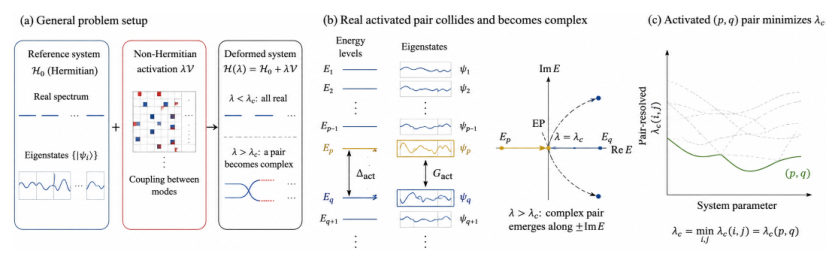
<figcaption class="paper-figure-caption"><b>Fig 1.</b> Figure 1. Activated-mode mechanism and real-to-complex threshold selection. (a) Operator family setup H(λ) = H0 + λV: H0 has a real reference spectrum, while λV activates complex eigenenergies. We seek the minimal coupling λ = λc at which the first eigenenergies leave the real axis. (b) Projecting V onto all candidate pairs identifies the activated pair (p, q) with the lowest pair-resolved EP threshold λ(i,j) c . Its threshold λc is set by the competition between the reference spectral detuning ∆act and the projected activation strength Gact. With increasing λ, the selected levels approach along Re E, coalesce at an EP, and subsequently escape into the complex plane. (c) As any system...</figcaption>
</figure>
<figure class="paper-figure-card">
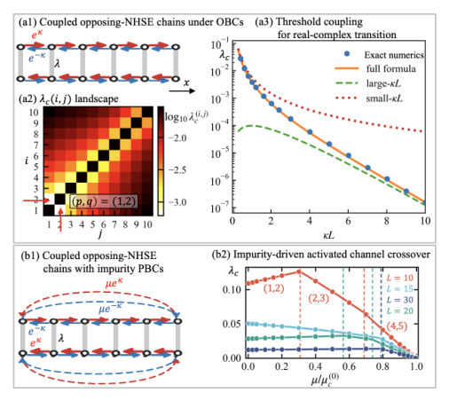
<figcaption class="paper-figure-caption"><b>Fig 2.</b> Figure 2. Boundary-controlled activation in antagonistic NHSE systems. Both (a,b) possess the same oppositely nonreciprocal HN bulk hoppings (inverse skin lengths ±κ) and inter-chain couplings λ, but differ in boundary closure: row (a) keeps the chains open, while row (b) closes them by end-to-end impurity links µe±κ. (a1) OBC realization [Eqs. (8)–(10)]. (a2) Pair-resolved two-mode thresholds λ(i,j) c [Eq. (27)]; in the displayed 10 × 10 low-index window (L = 100, κ = 0.02) the lower envelope selects the band-edge chan- nel (p, q) = (1, 2). (a3) λc threshold, with exact numerics in excellent agreement with our new closed-form expression Eq. (11), which connects the large-κL asymptote [Eq....</figcaption>
</figure>
<figure class="paper-figure-card">
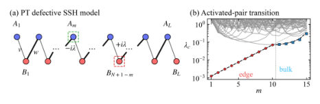
<figcaption class="paper-figure-caption"><b>Fig 3.</b> Figure 3. Seemingly non-local active-channel switching in a PT -defective SSH chain. (a) OBC SSH chain with bal- anced gain and loss at Am and BL+1−m [Eqs. (20) and (21)]. (b) Real-to-complex transition threshold λc versus m. Translucent gray curves show all pair-resolved candidates λ(i,j) c (m) = |Ei −Ej|/|2Aij|; their lower envelope gives the active-space prediction (black dashed curve), agreeing per- fectly with exact numerics (Red and Blue for edge- and bulk- activated channels, respectively). Their switching (vertical dotted line) occurs not only far from the topological edge (m = 1), but also unaccompanied by any bulk topological transition; in the edge regime, λc follows Eq. (22).</figcaption>
</figure>
</div>

<p><strong>Summary.</strong> The authors introduce an activated-mode principle to universally describe the critical threshold where non-Hermitian spectra transition from real to complex values. By identifying a minimal 'activated' subspace pair, they derive a closed-form condition that governs this onset across diverse physical models. This framework successfully predicts crossover regimes and channel switching without relying on specific symmetries or perturbative assumptions.</p>
<p><strong>Why it may be interesting.</strong> This work provides a powerful, generalized analytical tool for understanding spectral singularities (like EPs) that govern system stability or amplification onset in open quantum systems, applicable far beyond simple perturbation theory.</p>
<details>
<summary>Detailed structure</summary>
<p><strong>Main problem.</strong> The paper develops a general, non-perturbative activated-mode principle to govern the critical threshold for real-to-complex spectral transitions in non-Hermitian systems.</p>
<p><strong>Main result.</strong> It establishes a unified, closed-form condition ($\lambda_c = \Delta_{	ext{act}} / G_{	ext{act}}$) that determines the transition onset by finding the minimum threshold across all possible active Hilbert subspaces.</p>
<p><strong>Method.</strong> The theory involves pair-resolved analysis of the exceptional point (EP) condition on a small, 'activated' subspace, avoiding perturbative expansions in system parameters.</p>
<p><strong>Model / system.</strong> The framework is applied to broad classes of non-Hermitian systems, including coupled Hatano-Nelson chains, topological SSH models with gain/loss, and impurity-modified lattices.</p>
<p><strong>Key observables.</strong> Critical coupling strength ($\lambda_c$), spectral detuning ($\Delta E_{ij}$), and projected activation strength ($G_{	ext{act}}$).</p>
<p><strong>Important parameters / regimes.</strong> System size (L), impurity strength ($\mu$), and the ratio of hopping parameters in SSH models.</p>
<p><strong>Assumptions / limitations.</strong> The theory assumes that the transition is governed by a small, variationally determined active subspace pair, and $H_0$ is diagonalizable in the spectral window.</p>
<p><strong>Figures summary.</strong> Figures illustrate the activated mode mechanism (EP competition), show the agreement between derived closed-form thresholds and numerical results for cNHSE models, and track how the 'winning' active channel switches as a function of external parameters ($\mu$).</p>
<p><strong>Paper structure.</strong> The paper builds from establishing the general non-perturbative principle to applying it sequentially to specific physical realizations: first, generic NHSE systems; second, impurity-modified OBC/PBC setups; and finally, analyzing complex switching behavior in SSH chains.</p>
</details>
<details>
<summary>Abstract</summary>
<p>Real-to-complex spectral transitions mark the onset of amplification in non-Hermitian systems, but their thresholds are often treated as model-specific quantities. Here we develop a general, non-perturbative activated-mode principle that governs the real-to-complex threshold across broad classes of non-Hermitian systems. A central insight is that only a small Hilbert subspace is <code>activated" at the transition onset, which can be variationally determined through the competition between spectral detuning and mode-level projected non-Hermitian couplings. The result is a closed-form exceptional-activation condition for arbitrarily large</code>disturbances", rather than a perturbative estimate. We apply our framework to three contrasting illustrative problems, establishing (i) a closed-form threshold for critical non-Hermitian skin amplification at \emph{all} system sizes; (ii) a new link between impurity tunneling threshold and exceptional point switching; and (iii) activation channel switching without underlying topological phase transition. Overall, our findings recast real-to-complex transitions as generic mode-selection problems independent of any specific symmetry.</p>
</details>
<p><sub><a href="#top">↑ back to top</a></sub></p>

<p><a id="paper-2608.13041"></a></p>
<h3 id="time-evolution-of-nonlinear-dynamics-on-a-quantum-processor"><a href="http://arxiv.org/abs/2608.13041v1">Time evolution of nonlinear dynamics on a quantum processor</a></h3>
<p><strong>Authors:</strong> José Diogo da Costa Jesus, Abhishek Setty, Tommaso Calarco, Dieter Jaksch, Francisco Cárdenas López, Felix Motzoi<br>
<strong>Type:</strong> experiment · <strong>Category:</strong> quantum information and computing · <strong>PDF:</strong> <a href="https://arxiv.org/pdf/2608.13041v1">https://arxiv.org/pdf/2608.13041v1</a><br>
<strong>Analysis basis:</strong> full PDF text, analyzed in chunks
<strong>Topic relevance:</strong> 🔥 <code>QC/QI experiment</code> <strong>4/5</strong> · <code>Keldysh / 2PI / non-Gaussian methods</code> <strong>3/5</strong> · <code>methods for driven-dissipative</code> <strong>3/5</strong> · <code>analog quantum simulation</code> <strong>2/5</strong> · <code>driven-dissipative phase transition</code> <strong>2/5</strong> · <code>non-equilibrium universality</code> <strong>2/5</strong> · <code>Frenkel-Kontorova</code> <strong>1/5</strong> · <code>correlated / nonlocal dissipation</code> <strong>1/5</strong> · <code>quantum measurements</code> <strong>1/5</strong></p>
<div class="figure-strip-hint">↔ Scroll figures horizontally</div>
<div class="paper-figures-scroll">
<figure class="paper-figure-card">
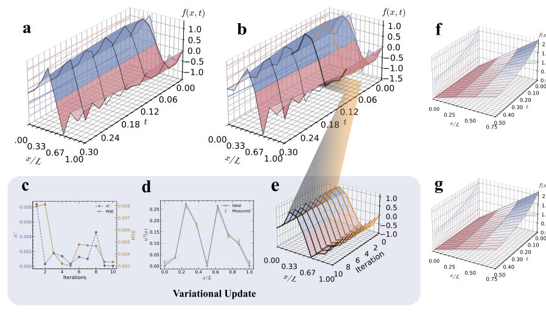
<figcaption class="paper-figure-caption"><b>Fig 1.</b> FIG. 1. Evolution of the Burgers equation in a convection-dominated regime. a) The ideal evolution of the viscous Burgers equation with viscosity ν = 0.01 for the initial condition f(x, 0) = sin(2πx). The competition between nonlinear convection and viscous diffusion progressively generates sharp spatial gradients and shock-like structures during the evolution. The evolution is performed variationally with timestep dt = 0.06 up to final time T = 0.3. b) Experimentally reconstructed evolution obtained using the variational quantum time- propagation protocol (see Figure 2), showing close agreement with the ideal nonlinear dynamics. The final MSE is 2.1% compared to the error-free dynamics,...</figcaption>
</figure>
<figure class="paper-figure-card">
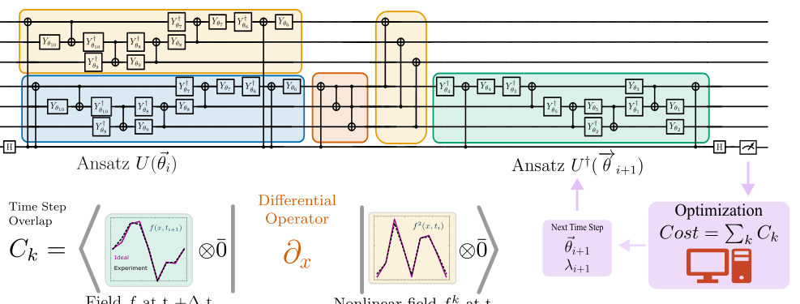
<figcaption class="paper-figure-caption"><b>Fig 2.</b> FIG. 2. Variational circuit decomposition for nonlinear Burgers dynamics. Quantum circuit implementing the convection term of the Burgers equation. Highlighted circuit components correspond to distinct contributions entering the nonlinear evolution. The blue block encodes the parametrized quantum state representing the field f(x, t) at the current timestep. The red block implements the discretized shifting operator associated with the spatial derivatives (a finite central derivative requires two shifters– one forwards and one backwards, see Eq. 11). The orange blocks represents the nonlinear-processing-unit (QNPU) which evaluates products of field amplitudes required for the nonlinear...</figcaption>
</figure>
<figure class="paper-figure-card">
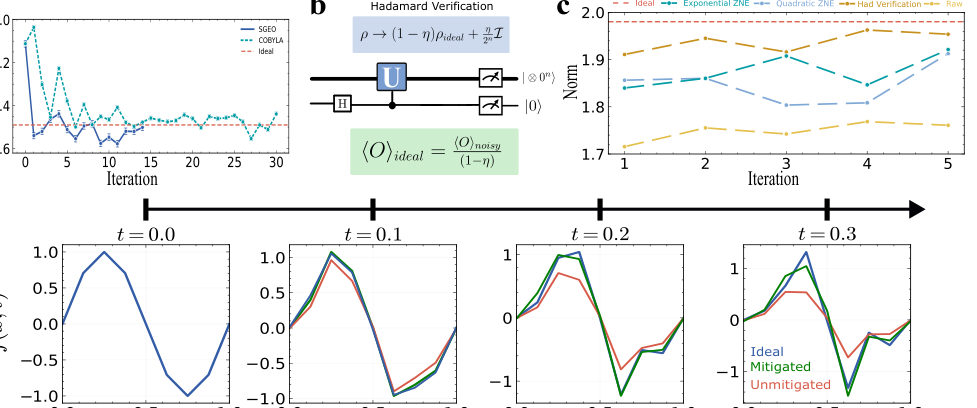
<figcaption class="paper-figure-caption"><b>Fig 3.</b> FIG. 3. Optimization and Error Mitigation Strategies for the Burgers dynamics considered a) Comparison between SGEO and COBYLA optimization for the Inviscid problem, for a single time step dt=0.1 and a cold start. Although COBYLA finds a good minima for the cost, it cannot sufficiently resolve the −→θ parameters and produces incorrect solutions. For this single time step the solution obtained via COBYLA has a MSE of 0.026 and a fidelity of 94.2% and the solution obtained via SGEO has a MSE of 0.01 and a fidelity of 99.2 % . b) Schematic representation of the Hadamard Verification method used for error mitigation. The controlled circuit U is assumed to produce a global depolorizing noise...</figcaption>
</figure>
<figure class="paper-figure-card">
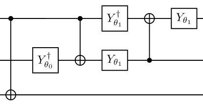
<figcaption class="paper-figure-caption"><b>Fig 4.</b> FIG. 4. Ansatz Used to Solve the Inviscid Burgers Equation</figcaption>
</figure>
<figure class="paper-figure-card">
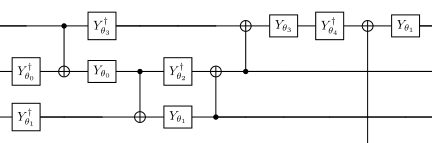
<figcaption class="paper-figure-caption"><b>Fig 5.</b> FIG. 5. Ansatz Used to Solve the Viscid Burgers Equation</figcaption>
</figure>
</div>

<p><strong>Summary.</strong> This paper reports the first experimental demonstration of simulating nonlinear time evolution using a superconducting quantum processor. By developing a variational framework that embeds nonlinearity directly into optimization circuits, they successfully simulated the Burgers equation across multiple timesteps. This work significantly expands the scope of quantum simulation beyond purely linear systems toward complex continuum dynamics.</p>
<p><strong>Why it may be interesting.</strong> This work directly pushes the boundaries of what is computationally feasible on near-term quantum hardware by tackling non-Hamiltonian dynamics, which is a major frontier in quantum computation theory.</p>
<details>
<summary>Detailed structure</summary>
<p><strong>Main problem.</strong> The core challenge is extending quantum simulation from linear, unitary dynamics to nonlinear and non-Hermitian evolution required for simulating continuum physics like fluid flow.</p>
<p><strong>Main result.</strong> The authors achieved the first experimental realization of time propagation for nonlinear dynamics (Burgers equation) on a quantum processor, successfully demonstrating stable evolution across multiple timesteps despite hardware noise.</p>
<p><strong>Method.</strong> They employ a hybrid variational framework that encodes nonlinearity directly into a quantum circuit optimization procedure, bypassing traditional linearization techniques like Carlemanization.</p>
<p><strong>Model / system.</strong> The system modeled is nonlinear fluid dynamics, specifically the viscous and inviscid Burgers equations. The computation is performed on superconducting quantum processors using parametrized quantum circuits.</p>
<p><strong>Key observables.</strong> Mean-Squared Error (MSE) comparing reconstructed dynamics to ideal evolution; state-overlap fidelity; time-dependent field reconstruction ($f(x, t)$).</p>
<p><strong>Important parameters / regimes.</strong> Reynolds numbers of order $10^2$; circuit depth up to 60 controlled-Z layers; viscous parameter $
u=0.01$.</p>
<p><strong>Assumptions / limitations.</strong> The approach assumes the validity of specific noise models (e.g., global depolarizing channel) for error mitigation techniques like Hadamard Verification.</p>
<p><strong>Figures summary.</strong> Figures summarize the reconstructed dynamics showing shock formation and gradient sharpening in both viscous and inviscid regimes, alongside comparisons of optimization methods (SGEO vs COBYLA) and error mitigation protocols.</p>
<p><strong>Paper structure.</strong> The paper introduces the problem gap (nonlinearity incompatibility), details the variational framework for time evolution, presents experimental results on superconducting hardware using advanced error mitigation techniques, and concludes by establishing a pathway for quantum simulation beyond linear settings.</p>
</details>
<details>
<summary>Abstract</summary>
<p>From fluid flow and transport to collective dynamics, numerical simulation of nonlinear partial differential equations underpins modern scientific computing. Extending this capability to quantum computers remains a longstanding challenge because nonlinear and non-Hermitian evolution is fundamentally incompatible with conventional Hamiltonian-based quantum simulation. Here we experimentally realize the time evolution of nonlinear fluid dynamics on a quantum processor using a hybrid variational framework for the viscous and inviscid Burgers equations. Our approach directly encodes the nonlinear dynamics into a variational optimization procedure, avoiding the enlarged linear embeddings and truncation overhead associated with Carleman linearization-based quantum algorithms. We further demonstrate convection-dominated dynamics corresponding to Reynolds numbers of order $10^2$. We encode the governing evolution into parametrized quantum circuits and iteratively reconstruct the time-dependent field through quantum-classical optimization. By introducing a zero-noise extrapolation method without additional circuit-folding overhead, we accurately execute deep error-circuits with entangling-gate counts beyond those typical of Hadamard test circuits. We accurately reconstruct the time evolution across multiple timesteps despite hardware noise and finite device coherence. Our results constitute, to our knowledge, the first experimental realization of nonlinear time propagation on a quantum processor, extending quantum simulation beyond predominantly linear settings and establishing a route toward quantum computation for nonlinear continuum dynamics.</p>
</details>
<p><sub><a href="#top">↑ back to top</a></sub></p>

<p><a id="paper-2608.13091"></a></p>
<h3 id="time-resolved-correlation-engineering-in-dlcz-raman-photon-sources"><a href="http://arxiv.org/abs/2608.13091v1">Time-resolved correlation engineering in DLCZ Raman photon sources</a></h3>
<p><strong>Authors:</strong> Jiun-Shiuan Shiu, Chang-Wei Lin, Chi-Ming Yang, Ite A. Yu, Yong-Fan Chen<br>
<strong>Type:</strong> both · <strong>Category:</strong> quantum information and computing · <strong>PDF:</strong> <a href="https://arxiv.org/pdf/2608.13091v1">https://arxiv.org/pdf/2608.13091v1</a><br>
<strong>Analysis basis:</strong> full PDF text, analyzed in chunks
<strong>Topic relevance:</strong> 🔥 <code>methods for driven-dissipative</code> <strong>4/5</strong> · <code>Keldysh / 2PI / non-Gaussian methods</code> <strong>3/5</strong> · <code>quantum optics experiment</code> <strong>3/5</strong> · <code>analog quantum simulation</code> <strong>2/5</strong> · <code>correlated / nonlocal dissipation</code> <strong>2/5</strong> · <code>quantum measurements</code> <strong>2/5</strong> · <code>QC/QI experiment</code> <strong>1/5</strong> · <code>driven-dissipative phase transition</code> <strong>1/5</strong> · <code>interference shaping light</code> <strong>1/5</strong></p>
<div class="figure-strip-hint">↔ Scroll figures horizontally</div>
<div class="paper-figures-scroll">
<figure class="paper-figure-card">
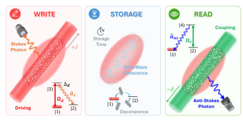
<figcaption class="paper-figure-caption"><b>Fig 1.</b> Fig. 1. Schematic of the DLCZ-type SRS process. During the write stage, a driving pulse with Rabi frequency Ωd and detuning ∆d excites the |1⟩→|3⟩transition. Stokes emission on |3⟩→|2⟩creates a collective |1⟩–|2⟩spin wave, which is stored for a controllable in- terval and decays through ground-state decoherence. During readout, a coupling pulse with Rabi frequency Ωc maps the stored spin wave onto an anti-Stokes field via state |4⟩. The Stokes and anti-Stokes fields propagate along +z and −z, respectively.</figcaption>
</figure>
<figure class="paper-figure-card">
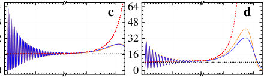
<figcaption class="paper-figure-caption"><b>Fig 2.</b> Fig. 2. Comparison of Stokes photon generation rates in DLCZ-type SRS and SFWM. Panels a–d use (OD,Ωd,∆d) = (10,2Γ,15Γ), (10,1Γ,15Γ), (10,2Γ,30Γ), and (20,2Γ,15Γ), re- spectively, with γ21 = 0.001Γ. The orange solid curves show the time-dependent open-system calculations using the piecewise- constant propagator. The blue solid curves show phenomenolog- ical depletion-corrected large-detuning estimates obtained by sub- stituting ODeff(T) = OD⟨ˆσ11(T)⟩into the undepleted response of Eq. (15). The red dashed curves show the undepleted-medium re- sults of Eq. (16), and the black dotted curves show the steady-state SFWM predictions under identical driving conditions90.</figcaption>
</figure>
<figure class="paper-figure-card">
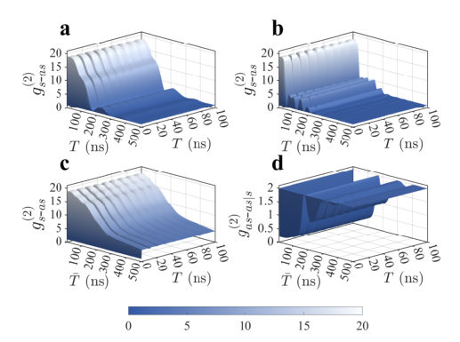
<figcaption class="paper-figure-caption"><b>Fig 3.</b> Fig. 5. Two-photon correlation functions in DLCZ-type SRS under different coupling conditions. Panels a–c show the calcu- lated time-resolved normalized cross-correlation profiles g(2) s-as(T, ¯T). The retrieval parameters (Ωc,∆c) are (2Γ,0), (4Γ,0), and (2Γ,2Γ) in panels a, b, and c, respectively. Panel d shows the correspond- ing model-inferred time-resolved zero-delay conditional anti-Stokes autocorrelation under the retrieval conditions of panel a. The quanti- ties in all panels are not averaged over finite detection windows. The calculations use a 100-ns driving pulse followed by a 200-ns storage interval. The driving parameters are fixed at Ωd = 2Γ and ∆d = 15Γ, with OD = 10, γ21 =...</figcaption>
</figure>
<figure class="paper-figure-card">
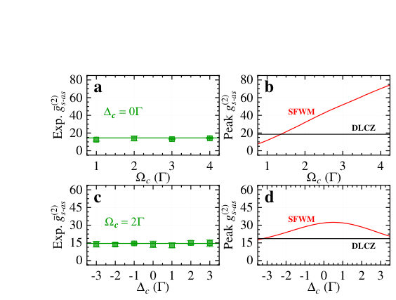
<figcaption class="paper-figure-caption"><b>Fig 4.</b> Fig. 6. Two-photon correlations in DLCZ-type SRS and com- parison with SFWM under different coupling conditions. Panels a and c show the measured integrated cross-correlations versus Ωc at ∆c = 0Γ and versus ∆c at Ωc = 2Γ, respectively. Squares represent the experimental data, and the solid curves represent the theoretical integrated cross-correlations. Panels b and d show the correspond- ing theoretical time-resolved peak cross-correlations for DLCZ-type SRS and SFWM. The integrated measurements and theoretical peak values are distinct temporal observables and are not expected to co- incide quantitatively. Unless otherwise stated, all experimental er- ror bars throughout this work...</figcaption>
</figure>
<figure class="paper-figure-card">
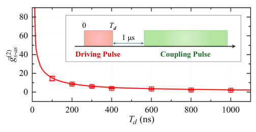
<figcaption class="paper-figure-caption"><b>Fig 5.</b> Fig. 8. Two-photon correlations in DLCZ-type SRS as a func- tion of driving pulse duration. Squares represent the experimental data, and the solid curve represents the theoretical integrated cross- correlation evaluated using the same temporal integration procedure. The correlation decreases with increasing driving pulse duration, showing that shorter write pulses enhance the correlation by reduc- ing the relative accidental-coincidence contribution. The measure- ments are performed with a storage time of 1 µs. The parameters are OD = 10, Ωd = Ωc = 2Γ, ∆d = 15Γ, γ21 = 0.001Γ, and ∆kL = 0.37π.</figcaption>
</figure>
</div>

<p><strong>Summary.</strong> This paper presents an advanced, unified quantum theory to model and predict the temporal correlations generated by DLCZ Raman photon sources used in quantum networks. By combining Heisenberg-Langevin dynamics with Maxwell-Schrödinger propagation, the authors experimentally validate that correlation engineering can be achieved through controlled retrieval tuning. This establishes a robust quantitative framework for generating high-quality entangled photons on demand.</p>
<p><strong>Why it may be interesting.</strong> This work is highly relevant as it tackles open-system dynamics in a platform critical for quantum networking—the DLCZ source. The combination of full propagation effects with time-resolved correlation measurement provides advanced tools for controlling photonic resources.</p>
<details>
<summary>Detailed structure</summary>
<p><strong>Main problem.</strong> The primary goal is developing a unified, predictive theory for time-resolved correlation engineering in DLCZ Raman photon sources that accounts for realistic propagation and noise.</p>
<p><strong>Main result.</strong> The study establishes a quantitative framework showing that classically controlled retrieval allows temporal gating of the anti-Stokes wavepacket, confirming robust correlations achievable through careful tuning.</p>
<p><strong>Method.</strong> The authors developed a propagation-inclusive open-system quantum theory combining Heisenberg-Langevin dynamics with Maxwell-Schrödinger propagation equations.</p>
<p><strong>Model / system.</strong> The system is based on the Duan–Lukin–Cirac–Zoller (DLCZ) protocol using spontaneous Raman scattering in atomic ensembles to generate entangled photon pairs for memory-assisted quantum networks.</p>
<p><strong>Key observables.</strong> Time-dependent Stokes generation, spin-wave evolution, retrieved anti-Stokes wavepackets, and time-resolved cross-correlations (two-photon correlations).</p>
<p><strong>Important parameters / regimes.</strong> Short write pulses enhance correlations; the theory is validated across different tuning ranges.</p>
<p><strong>Assumptions / limitations.</strong> The theory improves upon previous work by retaining write-driven population redistribution and combining propagation effects into the open-system framework.</p>
<p><strong>Figures summary.</strong> Figure 1 schematically illustrates the three stages of operation: WRITE (driving pulse $\Omega_d$, Stokes emission creating spin-wave), STORAGE, and READ (coupling pulse $\Omega_c$ mapping spin-wave to anti-Stokes field).</p>
<p><strong>Paper structure.</strong> The paper introduces the physical problem, develops the combined quantum theory using HLEs and MSEs, analyzes the dynamics in specific regimes (like large detuning), presents experimental validation of key predictions, and concludes by establishing the correlation engineering framework.</p>
</details>
<details>
<summary>Abstract</summary>
<p>Memory-assisted quantum networks require photon sources with controllable temporal and correlation properties. The Duan-Lukin-Cirac-Zoller (DLCZ) protocol provides a platform based on spontaneous Raman scattering in atomic ensembles, but a unified predictive theory connecting control parameters to correlations under realistic propagation and noise conditions remains lacking. Here we present a propagation-inclusive open-system quantum theory that retains write-induced population redistribution while combining Heisenberg-Langevin dynamics with Maxwell-Schrödinger propagation. We experimentally validate its key predictions. The theory predicts time-dependent Stokes generation, spin-wave evolution, retrieved anti-Stokes wavepackets, and time-resolved cross-correlations. Experiments confirm robust correlations under retrieval tuning and enhanced correlations for shorter write pulses, consistent with the different scaling of correlated coincidences and accidental backgrounds with the mean spin-wave excitation number. Classically controlled retrieval enables temporal gating and slicing of the anti-Stokes wavepacket, establishing a quantitative framework for correlation engineering in memory-compatible DLCZ photon sources.</p>
</details>
<p><sub><a href="#top">↑ back to top</a></sub></p>

<p><a id="paper-2608.13503"></a></p>
<h3 id="in-situ-adjoint-wave-control-in-reconfigurable-non-hermitian-nonlinear-systems"><a href="http://arxiv.org/abs/2608.13503v1">In-situ Adjoint Wave Control in Reconfigurable Non-Hermitian Nonlinear Systems</a></h3>
<p><strong>Authors:</strong> John Guillamon, William Tuxbury, Cheng-Zhen Wang, Owen Miller, Zin Lin, Tsampikos Kottos<br>
<strong>Type:</strong> both · <strong>Category:</strong> disordered systems and neural networks · <strong>PDF:</strong> <a href="https://arxiv.org/pdf/2608.13503v1">https://arxiv.org/pdf/2608.13503v1</a><br>
<strong>Analysis basis:</strong> full PDF text, analyzed in chunks
<strong>Topic relevance:</strong> 🔥 <code>methods for driven-dissipative</code> <strong>4/5</strong> · <code>interference shaping light</code> <strong>3/5</strong> · <code>quantum measurements</code> <strong>3/5</strong> · <code>driven-dissipative phase transition</code> <strong>2/5</strong> · <code>quantum optics experiment</code> <strong>2/5</strong> · <code>Keldysh / 2PI / non-Gaussian methods</code> <strong>1/5</strong> · <code>analog quantum simulation</code> <strong>1/5</strong> · <code>correlated / nonlocal dissipation</code> <strong>1/5</strong> · <code>non-equilibrium universality</code> <strong>1/5</strong></p>
<div class="figure-strip-hint">↔ Scroll figures horizontally</div>
<div class="paper-figures-scroll">
<figure class="paper-figure-card">
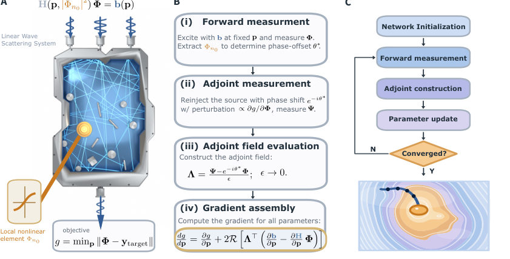
<figcaption class="paper-figure-caption"><b>Fig 1.</b> Figure 1: In-situ nonlinear adjoint protocol for gradient-based control of a wave-scattering</figcaption>
</figure>
<figure class="paper-figure-card">
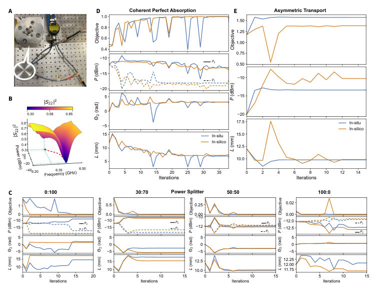
<figcaption class="paper-figure-caption"><b>Fig 2.</b> Figure 2: Experimental implementation of the iNAP protocol. (A) The physical platform con-</figcaption>
</figure>
<figure class="paper-figure-card">
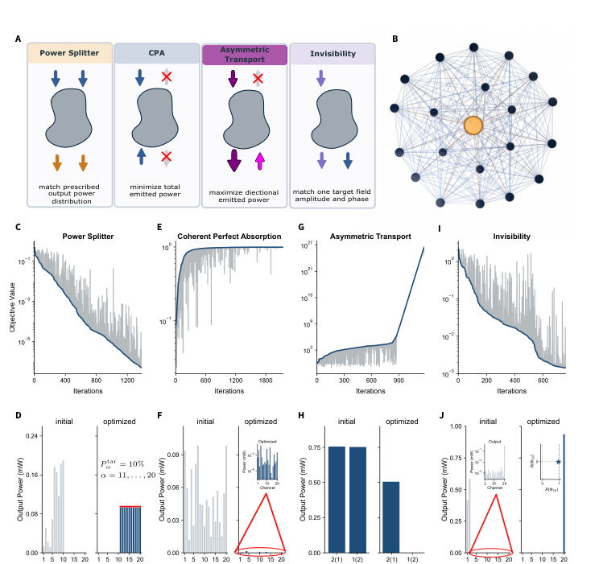
<figcaption class="paper-figure-caption"><b>Fig 3.</b> Figure 3: In-silico validation of iNAP in a large-scale network. (A) Testing iNAP across multiple</figcaption>
</figure>
</div>

<p><strong>Summary.</strong> This work introduces an In-situ Adjoint Optimization Protocol (iNAP) to enable real-time gradient-based optimization in complex nonlinear wave systems. By physically performing both forward and adjoint propagations on hardware, the method allows researchers to adaptively control devices like wireless communications components despite inherent multipath complexity and nonlinearity. This bypasses major computational bottlenecks associated with traditional system modeling.</p>
<p><strong>Why it may be interesting.</strong> The development of an <em>in-situ</em> optimization protocol that bypasses the need for full system modeling or digital twins is highly relevant to quantum optics and open quantum systems, as it provides a pathway for adaptive control in complex, noisy physical implementations.</p>
<details>
<summary>Detailed structure</summary>
<p><strong>Main problem.</strong> The research aims to overcome limitations in wave control by harnessing multipath complexity and nonlinearity, which are typically seen as impediments.</p>
<p><strong>Main result.</strong> They successfully demonstrate an in-situ adjoint optimization protocol (iNAP) that allows for real-time gradient calculation in complex nonlinear physical systems without needing digital twins or conventional backpropagation.</p>
<p><strong>Method.</strong> The core method is the In-situ Adjoint Optimization Protocol (iNAP), which involves sequential forward and adjoint measurements performed directly on the physical hardware to calculate parameter sensitivities.</p>
<p><strong>Model / system.</strong> The system utilizes a minimal platform composed of incommensurate coaxial cables forming a wave-chaotic multipath network, incorporating a single localized nonlinear defect. The analysis also details deriving a self-consistency equation for the resonator intensity by integrating out linear graph degrees of freedom.</p>
<p><strong>Key observables.</strong> Objective function gradient sensitivities ($\partial g / \partial p$), field measurements ($\Psi$, $\zeta$), and the resonant intensity ($y$).</p>
<p><strong>Important parameters / regimes.</strong> The nonlinearity strength, input power levels (e.g., -50 to 10 dBm), and system parameters $p$.</p>
<p><strong>Assumptions / limitations.</strong> For iNAP, a crucial assumption is enforcing field invariance under phase conjugation at the nonlinear defect to ensure adjoint dynamics match hardware emulation. For modeling, invertibility of the linear graph matrix ($\mathbf{A}^{-1}_g$) is assumed.</p>
<p><strong>Figures summary.</strong> Figure 1 illustrates the four-step physical measurement process for iNAP (Forward $
ightarrow$ Adjoint $
ightarrow$ Evaluation $
ightarrow$ Gradient). Figure S1 shows frequency-resolved scattering response $|S_{ij}|^2$ versus input power for a measured nonlinear vertex.</p>
<p><strong>Paper structure.</strong> The paper progresses from establishing the theoretical need to harness nonlinearity/multipath, detailing the iNAP protocol using adjoint fields in hardware (Chunk 1 &amp; 2), deriving a compact scalar self-consistency equation by integrating out linear graph modes (Chunk 3), and finally characterizing a physical nonlinear vertex using this framework (Chunk 4).</p>
</details>
<details>
<summary>Abstract</summary>
<p>Complex multipath environments are usually avoided in wave-based information processing because repeated scattering creates many interfering propagation paths, obscuring controllability and generating extreme sensitivity to perturbations. The addition of nonlinear mechanisms fundamentally alters the wave-control landscape by breaking the superposition principle that underpins most wave-management strategies. Here, we show that these two apparent impediments -- multipath complexity and nonlinearity -- can instead be harnessed as key resources for physical optimization. We demonstrate an in-situ adjoint optimization protocol in a wave-chaotic platform incorporating a single localized nonlinear defect, in which the system itself performs both the forward and the adjoint propagations required for gradient evaluation. Recurrent multipath returns repeatedly expose the wave to the defect, producing from a minimal hardware a rich nonlinear input-output map with many pathway-mediated degrees of freedom. At the same time, a suitable adjoint excitation enables direct extraction of the sensitivities from measurements alone, without a digital twin or conventional numerical backpropagation. We experimentally validate the protocol on a minimal nonlinear multipath platform composed of incommensurate coaxial cables connected via T-junctions, one of which hosts a diode-loaded cavity. Our approach opens a route to adaptive wireless communications, imaging and analog intelligence in complex, partially unknown environments where conventional modeling is impractical.</p>
</details>
<p><sub><a href="#top">↑ back to top</a></sub></p>

<p><a id="paper-2608.12504"></a></p>
<h3 id="spatially-dense-continuous-variable-quantum-computing-with-solid-state-spin-nonlinearities"><a href="http://arxiv.org/abs/2608.12504v1">Spatially Dense, Continuous-Variable Quantum Computing with Solid State Spin Nonlinearities</a></h3>
<p><strong>Authors:</strong> Hamza Raniwala, Ethan G Arnault, Dirk R. Englund, Matthew E. Trusheim<br>
<strong>Type:</strong> both · <strong>Category:</strong> quantum information and computing · <strong>PDF:</strong> <a href="https://arxiv.org/pdf/2608.12504v1">https://arxiv.org/pdf/2608.12504v1</a><br>
<strong>Analysis basis:</strong> full PDF text, analyzed in chunks
<strong>Topic relevance:</strong> 🔥 <code>QC/QI experiment</code> <strong>4/5</strong> · <code>methods for driven-dissipative</code> <strong>3/5</strong> · <code>Tavis-Cummings &amp; cavity-many-emitter</code> <strong>2/5</strong> · <code>driven-dissipative phase transition</code> <strong>2/5</strong> · <code>quantum optics experiment</code> <strong>2/5</strong> · <code>Keldysh / 2PI / non-Gaussian methods</code> <strong>1/5</strong> · <code>analog quantum simulation</code> <strong>1/5</strong> · <code>correlated / nonlocal dissipation</code> <strong>1/5</strong> · <code>quantum measurements</code> <strong>1/5</strong></p>
<div class="figure-strip-hint">↔ Scroll figures horizontally</div>
<div class="paper-figures-scroll">
<figure class="paper-figure-card">
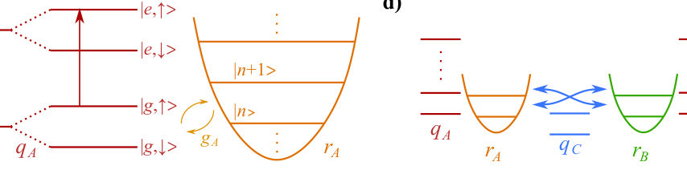
<figcaption class="paper-figure-caption"><b>Fig 1.</b> FIG. 1. a) A depiction of the device. Piezoelectric transducers (purple) are driven by a microwave tone coupled via an interdigitated capacitor. Each spin can be optically addressed (depicted by red cones) for spin polarization and readout. b) A unit cell of the device which contains three qubits. A coupling qubit qc ties together each logical cell. A logical cell consists of a spin qubit and a nanomechanical resonator. Logical information is encoded in the bosonic states of the nanomechanical resonator, which can be driven by the piezo and addressed by the spin qubit. Superconducting wires flow current to control the spin qubit. c) Spin (red) and nanomechanical (yellow) energy diagrams....</figcaption>
</figure>
<figure class="paper-figure-card">
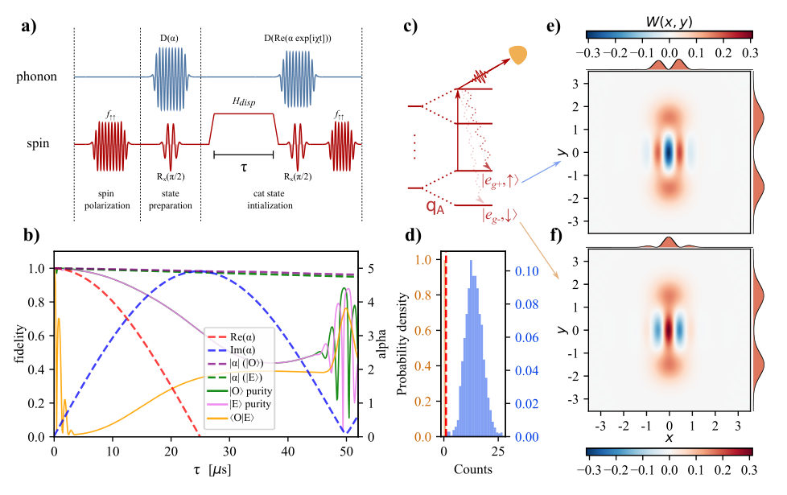
<figcaption class="paper-figure-caption"><b>Fig 2.</b> FIG. 2. a) The cat state preparation scheme. b) Plot of the system evolution over time during dispersive interaction. The dotted red (blue) line represents the real(imaginary) displacement of the coherent state in quasi-probability space, where the real component is the amount by which the state must be shifted to achieve the initial states. The solid purple(green) lines represent the even(odd) cat state purities, while the solid purple(green) lines represent their magnitudes. The solid yellow line represents the orthogonality of the even/odd cat states. c) Schematic of single shot optical readout with d) readout histograms distinguishing the spin-up(orange) and spin-down(blue) states...</figcaption>
</figure>
<figure class="paper-figure-card">
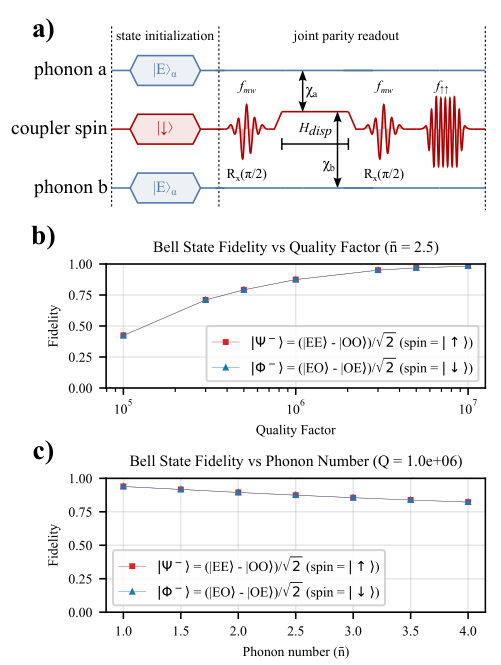
<figcaption class="paper-figure-caption"><b>Fig 3.</b> FIG. 4. a) Parity readout-based entanglement scheme. b) Bell state fidelity for increasing mean phonon number, ¯n, in the resonator. c) Bell state fidelity for various Qres with ¯n = 2.5.</figcaption>
</figure>
<figure class="paper-figure-card">
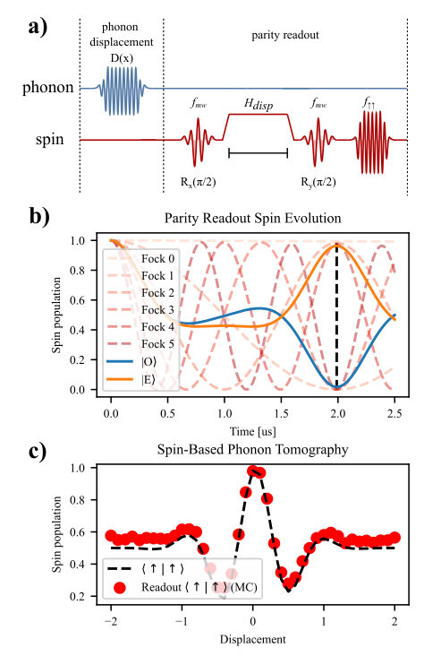
<figcaption class="paper-figure-caption"><b>Fig 4.</b> FIG. 3. Spin-enabled wigner tomography of the phonon state. a) wigner tomography scheme. b) spin population evolu- tion under dispersive interaction with the phonon for different phonon states, including the odd and even cat states prepared in Figure 1. c) Wigner tomography with spin population av- eraged over 1000 Monte Carlo simulated tomography experi- ments with varying real displacement of the even cat state</figcaption>
</figure>
<figure class="paper-figure-card">
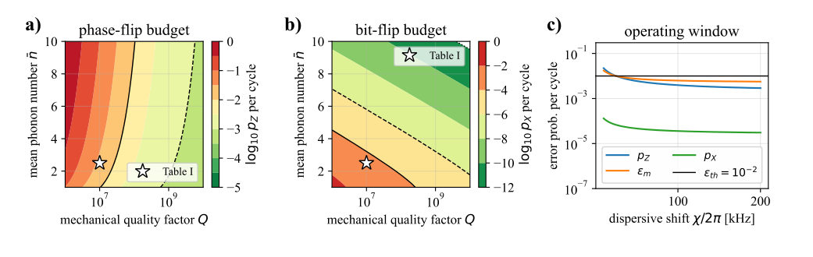
<figcaption class="paper-figure-caption"><b>Fig 5.</b> FIG. 5. Error-correction parameter requirements. a) Per-cycle phase-flip probability pZ (Eq. 10) as a function of mechanical quality factor Q and mean phonon number ¯n, with the Table I operating point marked (star) and the ϵth = 10−2 threshold contour (dashed). b) Per-cycle error probabilities — phase-flip pZ (blue), syndrome/measurement error ϵm (green), and bit-flip pX (orange) — as a function of dispersive shift χ/2π, against the ϵth = 10−2 threshold (black). c) Per-cycle bit-flip probability pX (Eq. 12) as a function of Q and ¯n, with the same Table I operating point and threshold contour as in (a).</figcaption>
</figure>
</div>

<p><strong>Summary.</strong> The paper proposes a novel, high-density quantum computing architecture combining nanomechanical resonators and solid-state spin defects. By using spins as nonlinear couplers, the system can encode information in bosonic cat states, enabling universal quantum gates. This approach promises scalability by achieving small qubit footprints while maintaining long coherence times necessary for error correction.</p>
<p><strong>Why it may be interesting.</strong> This work provides a concrete blueprint for integrating solid-state quantum memories (spins) with scalable bosonic qubits (resonators), offering an alternative pathway to fault-tolerant computation that addresses density limitations seen in superconducting circuits.</p>
<details>
<summary>Detailed structure</summary>
<p><strong>Main problem.</strong> Developing a scalable quantum computing platform using bosonic encoding that overcomes the resource intensity and low spatial density of current methods.</p>
<p><strong>Main result.</strong> The authors demonstrated high-fidelity single-qubit gates (X, Z) and two-qubit entangling operations with fidelities up to 0.98 in a solid-state spin-resonator architecture.</p>
<p><strong>Method.</strong> The work combines theoretical modeling of the Hamiltonian with numerical simulations (Lindblad/QMC) to demonstrate gate sequences and error correction protocols.</p>
<p><strong>Model / system.</strong> The platform uses nanomechanical resonators for bosonic encoding (cat states) coupled to strain-sensitive solid-state spin defects. The interaction is modeled via dispersive coupling, allowing for controlled quantum operations.</p>
<p><strong>Key observables.</strong> Cat state fidelity (&gt;0.98), single-shot optical parity readout fidelity (&gt;0.95), and gate fidelities ($X_L, Z_L$).</p>
<p><strong>Important parameters / regimes.</strong> The system leverages the small footprint ($\sim 10 \mu	ext{m}^2$) compared to other codes, and long coherence times from diamond spins are key.</p>
<p><strong>Assumptions / limitations.</strong> The architecture relies on piezoelectric driving for population, and gate fidelity is limited by photon loss or quasi-static noise in certain protocols.</p>
<p><strong>Figures summary.</strong> Figures illustrate the device structure, unit cell coupling, cat state preparation/readout schemes (using spin ancillae), and detailed sequences for single-qubit gates ($X_L$ via unitary evolution) and parity readout.</p>
<p><strong>Paper structure.</strong> The paper progresses from defining the physical system and Hamiltonian to demonstrating cat state initialization, followed by protocols for single-qubit gates, two-qubit entanglement generation, and finally addressing noise mitigation through dynamical decoupling techniques.</p>
</details>
<details>
<summary>Abstract</summary>
<p>Nanomechanical structures have been investigated as a method of achieving long-lived quantum excitations at radio frequencies. Their high quality factors are especially intriguing as a medium for bosonic encoding of quantum information. However, to leading order, mechanical modes typically lack the nonlinearities necessary to achieve interaction between bosonic channels and thus are limited in their ability to scale to the many-qubit regime necessary for practical quantum computing. In this work, we propose and describe an approach for bosonic quantum information processing that uses strain-sensitive solid-state spins as nonlinear elements to produce the relevant nonclassical mechanical states. We outline the architecture required to achieve nearest-neighbor connectivity between mechanical cat-state qubits on-chip, as well as the control and readout architecture required for universal quantum computation. In addition, we show that this architecture can allow for a high spatial density of logical qubits by leveraging both the efficiency of bosonic error correction schemes and the small sizes of the constituent nanomechanical resonators and spin qubits. Finally, we identify the necessary performance metrics that will enable error-correction thresholds at high qubit densities, illuminating a path towards scalable quantum information processing.</p>
</details>
<p><sub><a href="#top">↑ back to top</a></sub></p>

<p><a id="paper-2608.12972"></a></p>
<h3 id="always-on-highly-efficient-microwave-photon-detector-based-on-a-superconducting-artificial-molecule"><a href="http://arxiv.org/abs/2608.12972v1">Always-on, highly efficient microwave photon detector based on a superconducting artificial molecule</a></h3>
<p><strong>Authors:</strong> Vyom Kulkarni, Mohammed Ali Aamir, Simon Sundelin, Simone Gasparinetti<br>
<strong>Type:</strong> experiment · <strong>Category:</strong> other · <strong>PDF:</strong> <a href="https://arxiv.org/pdf/2608.12972v1">https://arxiv.org/pdf/2608.12972v1</a><br>
<strong>Analysis basis:</strong> full PDF text, analyzed in chunks
<strong>Topic relevance:</strong> 🔥 <code>quantum measurements</code> <strong>4/5</strong> · <code>QC/QI experiment</code> <strong>3/5</strong> · <code>driven-dissipative phase transition</code> <strong>2/5</strong> · <code>quantum optics experiment</code> <strong>2/5</strong> · <code>Full counting statistics</code> <strong>1/5</strong> · <code>Tavis-Cummings &amp; cavity-many-emitter</code> <strong>1/5</strong> · <code>analog quantum simulation</code> <strong>1/5</strong> · <code>correlated / nonlocal dissipation</code> <strong>1/5</strong> · <code>methods for driven-dissipative</code> <strong>1/5</strong></p>
<div class="figure-strip-hint">↔ Scroll figures horizontally</div>
<div class="paper-figures-scroll">
<figure class="paper-figure-card">
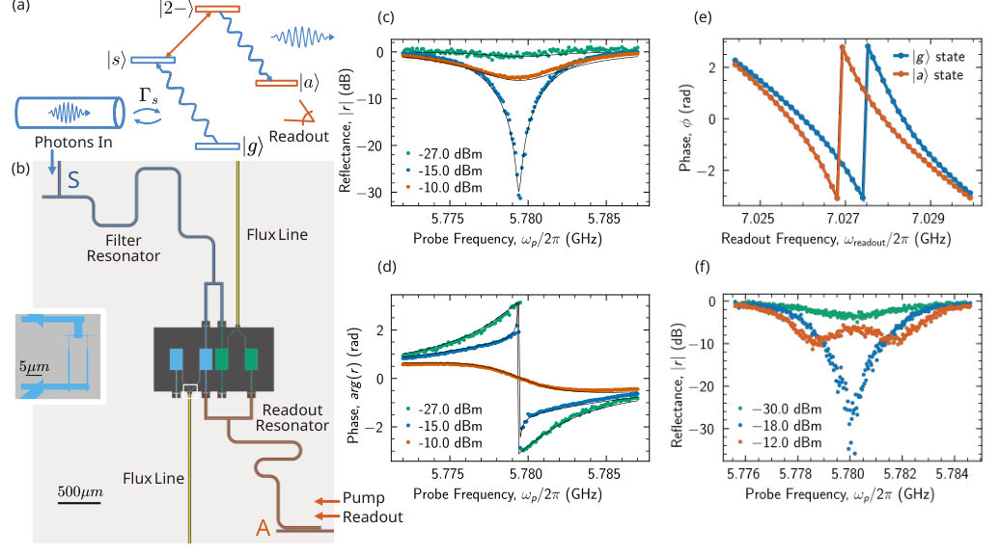
<figcaption class="paper-figure-caption"><b>Fig 1.</b> FIG. 1. a. Operating principle of the detector. Incident photons are absorbed by the symmetric mode. The pump coherently excites the system to the |2−⟩state, which subsequently relaxes to the metastable state |a⟩. The population of |a⟩is continuously monitored using dispersive readout. b. Device layout. The circuit consists of two coupled flux-tunable transmon qubits, shown in light blue and green, which are tuned into resonance using flux lines, shown in yellow. The inset displays the superconducting quantum interference device located in close proximity to the flux line. The device has two radio-frequency ports: waveguide S, which routes incident photons to the detector, and waveguide A,...</figcaption>
</figure>
<figure class="paper-figure-card">
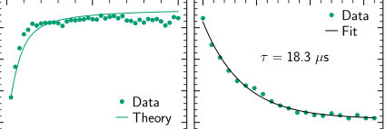
<figcaption class="paper-figure-caption"><b>Fig 2.</b> FIG. 2. Cyclic photodetection. a. Pulse sequence. A 50 µs-long pump is applied to the |s⟩↔|2−⟩transition. The state of |a⟩is measured at the end of the pump using a readout pulse. A coherent photon pulse with calibrated mean photon number ¯n is routed to the detector input a time tdelay before the readout pulse. b. Detection efficiency. Population pa of state |a⟩is measured using single-shot statistics as a func- tion of mean photon number ¯n at zero tdelay. Inset: pa as a function of ¯n in the range ¯n ≤0.2. The solid blue line indi- cates a linear fit. c,d. Representative single-shot histograms for ¯n = 0 and ¯n = 1. e. Cyclic detection efficiency ηcyc vs the photon pulse duration tph at...</figcaption>
</figure>
<figure class="paper-figure-card">
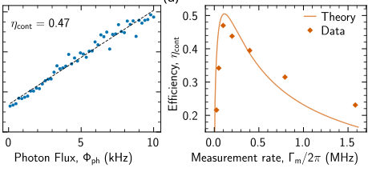
<figcaption class="paper-figure-caption"><b>Fig 3.</b> FIG. 3. Continuous photodetection. a. The pump tone is played continuously while routing a calibrated coherent pho- ton flux Φph to the symmetric mode. The state of the anti- symmetric mode is measured at rate Γm using a continuous tone on the readout resonator. b. A typical 2 ms-long filtered trace exhibiting 10 quantum jumps between the states |g⟩and |a⟩triggered by captured photons. The dashed black line de- notes the threshold above which readout signal is counted as a jump. c. The jump rate, extracted from the time trace, is plotted against the photon flux incident on the symmet- ric mode. Dotted line indicates a linear fit. d. Continuous detection efficiency ηcont is plotted against...</figcaption>
</figure>
<figure class="paper-figure-card">
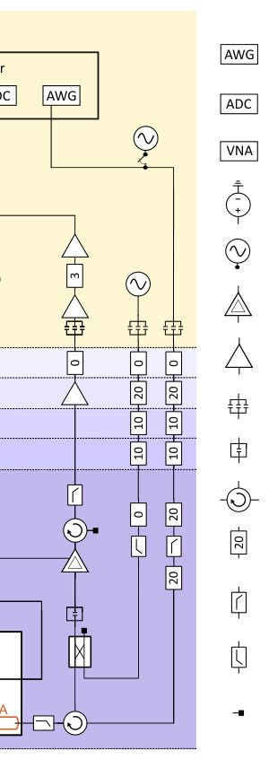
<figcaption class="paper-figure-caption"><b>Fig 4.</b> FIG. 4. Complete experimental setup. See text for description.</figcaption>
</figure>
<figure class="paper-figure-card">
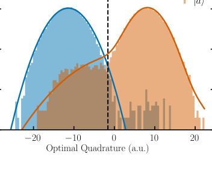
<figcaption class="paper-figure-caption"><b>Fig 5.</b> FIG. 5. Histograms of single-shot readout statistics, with the molecule prepared in |g⟩(blue) and |a⟩(orange). Counts are plotted against the optimal readout quadrature. Solid lines show the fitted Gaussian mixture models and the dashed black line indicates the decision boundary.</figcaption>
</figure>
</div>

<p><strong>Summary.</strong> The paper presents an experimental realization of a continuously operating microwave single-photon detector using a superconducting artificial molecule. By engineering the system dynamics to transfer absorbed photons into a continuously monitored state, they overcome the efficiency vs. duty cycle trade-off inherent in prior detectors. This breakthrough enables continuous quantum measurement crucial for quantum sensing and thermodynamics.</p>
<p><strong>Why it may be interesting.</strong> This work is highly relevant to AMO physics as it uses superconducting circuits—a platform for engineered quantum matter—to solve a fundamental problem in quantum optics: efficient, continuous single-photon detection.</p>
<details>
<summary>Detailed structure</summary>
<p><strong>Main problem.</strong> The primary challenge addressed is developing a microwave single-photon detector that achieves high efficiency, low dark counts, and continuous operation simultaneously, overcoming limitations of existing cyclic detectors.</p>
<p><strong>Main result.</strong> The authors demonstrated a continuously operated detector with a measured efficiency of 0.47, successfully establishing a method for continuous microwave photon detection in quantum technologies.</p>
<p><strong>Method.</strong> The experiment involves characterizing the system's response using both pulsed (cyclic) and continuous readout protocols, analyzing quantum jumps and signal-to-noise ratios.</p>
<p><strong>Model / system.</strong> The physical platform is a superconducting artificial molecule built from two coupled transmon qubits. The dynamics are modeled as a four-level system involving symmetric ($   ext{S}$) and anti-symmetric ($    ext{A}$) modes, driven by photon absorption into the $  ext{S}$ mode and monitored via continuous readout of the $  ext{A}$ mode.</p>
<p><strong>Key observables.</strong> Continuous detection efficiency ($\eta_{	ext{cont}} = 0.47$), dark count rate ($1.3 	ext{ kHz}$), temporal resolution ($1\ \mu	ext{s}$), and dead time ($15\ \mu	ext{s}$).</p>
<p><strong>Important parameters / regimes.</strong> Operating temperature of $8 	ext{ mK}$; coupling rate $\Gamma_s/2\pi = 7.26 	ext{ MHz}$.</p>
<p><strong>Assumptions / limitations.</strong> The continuous efficiency is modeled as a product of the intrinsic absorption efficiency ($\eta_{	ext{abs}}$) and the readout fidelity factor ($F_{	ext{cont}}$), which are both dependent on measurement strength.</p>
<p><strong>Figures summary.</strong> Figures illustrate the operating principle, spectroscopy of the symmetric mode, dispersive readout of the anti-symmetric mode, and the photon transfer mechanism from $    ext{S}$ to $    ext{A}$.</p>
<p><strong>Paper structure.</strong> The work progresses by first characterizing the system modes (spectroscopy), then demonstrating pulsed detection efficiency ($\eta_{	ext{cyc}}$), and finally establishing continuous operation by modeling the trade-off between absorption and readout fidelity.</p>
</details>
<details>
<summary>Abstract</summary>
<p>Efficient detection of single microwave photons is a key capability for emerging quantum technologies. Yet, it remains far less developed than its optical domain counterpart. Realizing detectors that simultaneously achieve high efficiency, low dark counts, and continuous operation has proved challenging. Existing detectors operate cyclically, forcing a trade-off between efficiency and duty cycle. Here, we demonstrate a continuously operated microwave single-photon detector based on a superconducting artificial molecule. In our scheme, an incoming photon is captured by a bright state of the molecule and then transferred to a long-lived dark state via a driven-dissipative process. Photon ``clicks'' are revealed as quantum jumps in the continuously monitored dark state. We observe a cyclic detection efficiency of $0.73$, and a continuous detection efficiency of $0.47$ over a $5\,\mathrm{MHz}$ instantaneous bandwidth, with a $1\,μ\mathrm{s}$ temporal resolution and a $15\,μ\mathrm{s}$ dead time. By overcoming the trade-off between efficiency and duty cycle, this approach establishes continuous microwave photon detection for quantum sensing, quantum thermodynamics, and fundamental physics.</p>
</details>
<p><sub><a href="#top">↑ back to top</a></sub></p>

<p><a id="paper-2608.13308"></a></p>
<h3 id="heat-transport-in-driven-quantum-systems-comparison-between-the-floquet-redfield-equation-and-the-master-equation-in-the-instantaneous-eigenbasis"><a href="http://arxiv.org/abs/2608.13308v1">Heat transport in driven quantum systems: Comparison between the Floquet-Redfield equation and the master equation in the instantaneous eigenbasis</a></h3>
<p><strong>Authors:</strong> Luca Magazzù, Christoforus Dimas Satrya, Aleksandr S. Strelnikov, Bayan Karimi, Jukka P. Pekola<br>
<strong>Type:</strong> theory · <strong>Category:</strong> statistical mechanics · <strong>PDF:</strong> <a href="https://arxiv.org/pdf/2608.13308v1">https://arxiv.org/pdf/2608.13308v1</a><br>
<strong>Analysis basis:</strong> full PDF text, analyzed in chunks
<strong>Topic relevance:</strong> 🔥 <code>methods for driven-dissipative</code> <strong>4/5</strong> · <code>Keldysh / 2PI / non-Gaussian methods</code> <strong>3/5</strong> · <code>driven-dissipative phase transition</code> <strong>3/5</strong> · <code>non-equilibrium universality</code> <strong>2/5</strong> · <code>analog quantum simulation</code> <strong>1/5</strong> · <code>correlated / nonlocal dissipation</code> <strong>1/5</strong> · <code>quantum measurements</code> <strong>1/5</strong> · <code>scars &amp; prethermalization</code> <strong>1/5</strong></p>
<div class="figure-strip-hint">↔ Scroll figures horizontally</div>
<div class="paper-figures-scroll">
<figure class="paper-figure-card">
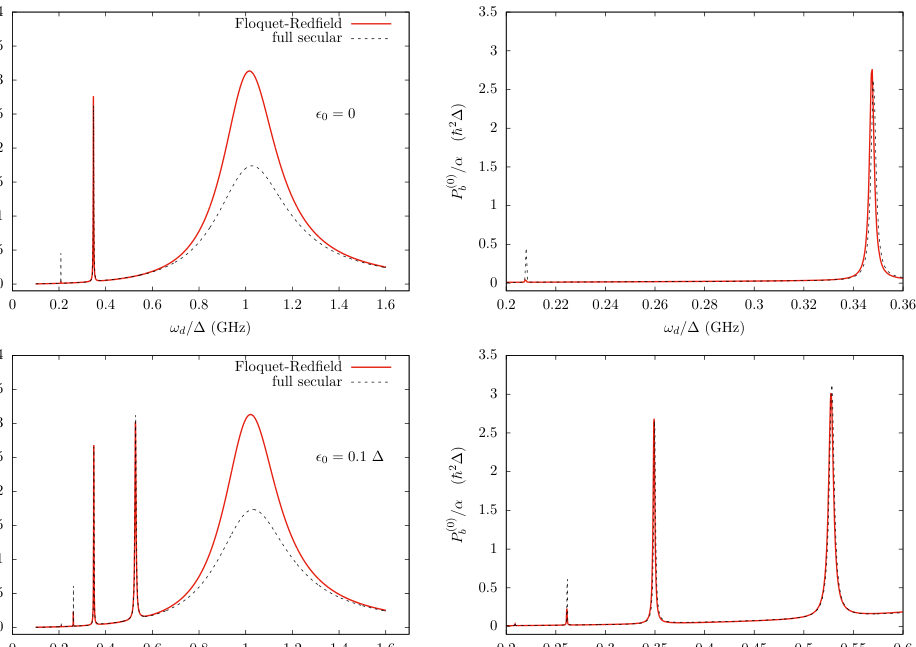
<figcaption class="paper-figure-caption"><b>Fig 1.</b> FIG. 1. Driven qubit. Steady-state heat current to the bath vs. drive frequency for Ad = 0.4 ∆, at zero (upper panels) and finite (lower panels) bias. Details of the peaks in the right panels. Red curves: Numerical solution of the steady-state Floquet-Redfield master equation (28) and Eq. (35) with k = 0 (one-period average of the heat current to the bath). The only approximation used is weak system-bath coupling. Dashed, black lines: Numerical solution of the full secular master equation and heat current, Eqs. (37)-(39). The bath has a ohmic-Drude spectral density function, Eq. (41), with cutoff ωc = 20 ∆and coupling strength α = 0.0003 (relevant for the full Floquet-Redfield master...</figcaption>
</figure>
<figure class="paper-figure-card">
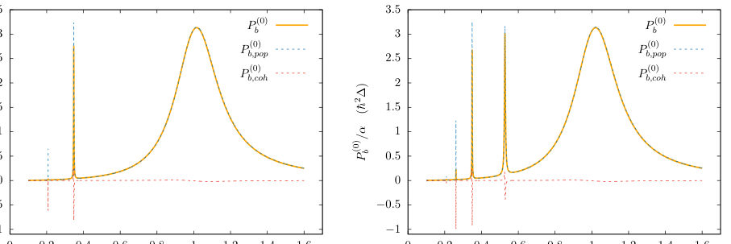
<figcaption class="paper-figure-caption"><b>Fig 2.</b> FIG. 2. Impact of steady-state coherences in the Floquet-Redfield approach. Steady-state heat current to the bath vs. drive frequency for Ad = 0.4 ∆, at zero (left) and finite (right) bias. Orange, solid lines: Numerical solution of the full Floquet- Redfield master equation (28) and Eq. (35) with k = 0 (one-period average of the heat current). Dashed, blue and red lines: separate contributions to P (0) b from populations and coherences, respectively, according to Eq. (42). Parameters are as in Fig. 1</figcaption>
</figure>
<figure class="paper-figure-card">

<figcaption class="paper-figure-caption"><b>Fig 3.</b> FIG. 3. Time-averaged, steady-state value of Pb(t) vs. drive frequency, Eqs. (55)-(57) dashed-blue lines. The solution is propagated up to the steady state and averaged over several drive periods for two values of drive amplitude Ad = 0.4 ∆(upper panels) and Ad = 0.1 ∆(lower panels), at zero and finite bias. Comparison with the full Floquet-Redfield equation approach, Eqs. (28) and (35) (the latter with k = 0, i.e. one-period average of the heat current to the bath) (solid red line). The results of the full secular master equation approach, Eqs. (37)-(39), are also shown for reference (dashed, gray lines). Other parameters are as in Fig. 1. Note that the discrepancy at high frequency and...</figcaption>
</figure>
<figure class="paper-figure-card">

<figcaption class="paper-figure-caption"><b>Fig 4.</b> FIG. 4. One-period average of the heat current to the bath vs. drive frequency. Analytical calculation, Eq. (A4) (solid lines), using the weak-drive expansion for the one-period averaged qubit frequency ¯ωq. Comparison with the numerical solution of the time-dependent master equation in the instantaneous eigenbasis (dashed lines), Eqs. (55)-(57). Parameters are as in Fig. 1.</figcaption>
</figure>
</div>

<p><strong>Summary.</strong> This paper provides a rigorous comparison of theoretical methods—specifically the Floquet-Redfield equation versus the master equation—for modeling heat transport in quantum systems subjected to periodic driving. By analyzing a driven spin-boson model, the authors demonstrate that advanced techniques are necessary to capture non-trivial features like multi-photon resonances in the heat current spectrum, which simpler approximations miss.</p>
<p><strong>Why it may be interesting.</strong> This is highly relevant as it tackles non-equilibrium quantum thermodynamics in periodically driven systems, a key area where standard approximations often fail to capture resonant or multi-photon effects crucial for understanding energy harvesting and thermal machines.</p>
<details>
<summary>Detailed structure</summary>
<p><strong>Main problem.</strong> The study compares different theoretical frameworks, specifically the Floquet-Redfield equation versus the full master equation approach, for accurately calculating heat transport in periodically driven quantum systems.</p>
<p><strong>Main result.</strong> The non-secular Floquet-Redfield approach correctly predicts multi-photon resonances in the heat current spectrum, outperforming simpler secular approximations, especially near resonance points.</p>
<p><strong>Method.</strong> The authors employ projection operator techniques to derive generalized master equations, which are then analyzed by projecting onto the basis of Floquet states for periodic driving.</p>
<p><strong>Model / system.</strong> The work analyzes a general open quantum system, exemplified by a driven spin-boson model (a qubit coupled to a bosonic heat bath). The dynamics are governed by Hamiltonians involving time-periodic terms and coupling to an environment characterized by spectral densities.</p>
<p><strong>Key observables.</strong> Heat current ($P_b(t)$), steady-state populations, coherences ($ ilde{
ho}_{nm}(t)$), and the power spectrum of bath fluctuations $S(\omega)$.</p>
<p><strong>Important parameters / regimes.</strong> Drive frequency ($\omega_d$), coupling strength (weak coupling limit), spectral density function parameters (e.g., ohmic spectral density).</p>
<p><strong>Assumptions / limitations.</strong> The analysis develops from exact weak-coupling results, comparing them against approximations like the Markovian or full secular approximations; discrepancies are noted when using the instantaneous eigenbasis approach outside the adiabatic regime.</p>
<p><strong>Figures summary.</strong> Figures likely compare calculated heat current spectra (e.g., showing multi-photon peaks) derived from different theoretical limits (Floquet-Redfield vs. Secular Master Equation).</p>
<p><strong>Paper structure.</strong> The paper establishes the general open quantum system dynamics using a master equation, projects this onto the Floquet basis for periodic driving, and then systematically compares results obtained via the full Floquet-Redfield formalism against simplified approximations like the secular or Markovian limits.</p>
</details>
<details>
<summary>Abstract</summary>
<p>We provide a comprehensive study of heat transport in periodically driven quantum systems using a combination of master equation and Floquet approach. We give exact results (within the weak coupling Redfield theory, with no Markovian or secular approximations) and compare them with alternative approaches involving further approximations. Numerical and analytical results obtained in their appropriate driving regimes are provided for the driven spin boson-model. The adiabatic regime, which is relevant to thermal machines, is discussed.</p>
</details>
<p><sub><a href="#top">↑ back to top</a></sub></p>

<p><a id="paper-2608.13335"></a></p>
<h3 id="neural-quadratic-forms-a-unified-minimal-model-for-sudden-learning-and-scaling-laws"><a href="http://arxiv.org/abs/2608.13335v1">Neural Quadratic Forms: A Unified Minimal Model for Sudden Learning and Scaling Laws</a></h3>
<p><strong>Authors:</strong> Liu Ziyin, Yizhou Xu, Tomaso Poggio, Isaac Chuang<br>
<strong>Type:</strong> theory · <strong>Category:</strong> disordered systems and neural networks · <strong>PDF:</strong> <a href="https://arxiv.org/pdf/2608.13335v1">https://arxiv.org/pdf/2608.13335v1</a><br>
<strong>Analysis basis:</strong> full PDF text, analyzed in chunks
<strong>Topic relevance:</strong> 🔥 <code>analog quantum simulation</code> <strong>4/5</strong> · <code>methods for driven-dissipative</code> <strong>3/5</strong> · <code>non-equilibrium universality</code> <strong>3/5</strong> · <code>correlated / nonlocal dissipation</code> <strong>2/5</strong> · <code>scars &amp; prethermalization</code> <strong>2/5</strong> · <code>Keldysh / 2PI / non-Gaussian methods</code> <strong>1/5</strong> · <code>driven-dissipative phase transition</code> <strong>1/5</strong></p>
<div class="figure-strip-hint">↔ Scroll figures horizontally</div>
<div class="paper-figures-scroll">
<figure class="paper-figure-card">

<figcaption class="paper-figure-caption"><b>Fig 1.</b> Figure 1: Permutation symmetry of the units allows us to characterize the model with structure matrices A. (a) Perceptrons, attention layers, mixtures of experts and convolutions are all sums over interchangeable components, so a permutation leaves the represented function unchanged. (b) Training begins with all weights near zero, so each module may be Taylor expanded about that point. Given smoothness and the condition that a component’s gradient vanish whenever that component’s own weights do, symmetry then enforces the same leading quadratic form in every case (Theorem 1), and the architecture survives only in the structure matrix A(x). Here x is a single input to the module.</figcaption>
</figure>
<figure class="paper-figure-card">

<figcaption class="paper-figure-caption"><b>Fig 2.</b> Figure 2: NQF approximation across initialization, optimizer, and architecture. Two initialization scales are juxtaposed—small init (σ = 0.01, left) and large init (σ = 0.2, right). Within each block, rows are optimizers and columns are architectures. Each module is trained together with its NQF approximation on an NQF teacher with singular values s = (1, 1</figcaption>
</figure>
<figure class="paper-figure-card">

<figcaption class="paper-figure-caption"><b>Fig 3.</b> Figure 3: Sudden learning in a solvable NQF, the phenomenon the theory of this paper is built to explain. The experi- ment is under the feature-wise descent setting of Section 6. Solid lines represent the theory in Theorem 6 and markers represent the results obtained by GD. Vertical dashed lines mark the characteristic timescales t∗ k = 1 rk ln( rk Ckkϵ) where each feature reaches half-saturation. Left: Evolution of the eigenvalues of WW ⊺. Middle: The excess MSE loss over time, which exhibits sequential plateaus. Each sharp drop in the loss aligns with t∗ k. Right: Under the feature-wise descent setting of Section 6, the blue dashed line indicates the theoretical slope and confirms that...</figcaption>
</figure>
<figure class="paper-figure-card">

<figcaption class="paper-figure-caption"><b>Fig 4.</b> Figure 4: The experiment is under the setting of the sample-wise descent in Section 6. Solid lines represent the theory of Theorem 5 obtained by numerically solving Eq. (36), and markers represent the empirical results obtained by full- batch GD. Vertical dashed lines mark the characteristic timescales t∗ µ = ζ−1 µ ln(1/ϵ) according to (47). Left: Evolution of the per-sample loss ∆µ(t)2 = (Tr[WW ⊺A(xµ)] −yµ)2, showing independent and sequential convergence. Right: The total empirical MSE loss over time, which exhibits m sequential plateaus. Each discrete drop in the total loss matches the respective timescale t∗ µ.</figcaption>
</figure>
<figure class="paper-figure-card">

<figcaption class="paper-figure-caption"><b>Fig 5.</b> Figure 5: Curves show the normalized MSE L(t)/L(0); dotted lines are the slopes predicted in Section 6. Left: For θ = 1, the Fourier MLP (blue) descends as the predicted power law t−(2β−1)/(θ+β) (see Appendix C) and is tracked by its NQF approximation (black); a standard tanh MLP trained on the raw input x (red), which does not exhibit the power law. Right: The power-law exponent of the Fourier MLP (solid lines) matches the theory (dashed lines) for θ ∈{0,0.5,1}.</figcaption>
</figure>
</div>

<p><strong>Summary.</strong> This work unifies the theory of neural network training by deriving the Neural Quadratic Form (NQF) based on permutation symmetry. It demonstrates that diverse architectures map onto this single model, whose dynamics are governed by solvable equations like Lotka–Volterra systems. This provides a powerful theoretical tool to predict both sudden learning plateaus and smooth scaling laws across different deep learning models.</p>
<p><strong>Why it may be interesting.</strong> The mathematical machinery developed—reducing complex high-dimensional learning dynamics to low-dimensional, solvable ODEs governed by symmetry principles—is highly relevant for understanding emergent collective behavior in many-body quantum systems or disordered physical models.</p>
<details>
<summary>Detailed structure</summary>
<p><strong>Main problem.</strong> The paper unifies two seemingly disparate observations in neural network training: abrupt 'sudden learning' steps and smooth power-law scaling laws.</p>
<p><strong>Main result.</strong> It shows that the dynamics of various architectures (MLPs, Attention) can be unified under a single mathematical framework called the Neural Quadratic Form (NQF), whose evolution reduces to solvable differential equations like Lotka–Volterra systems.</p>
<p><strong>Method.</strong> The analysis uses symmetry arguments (permutation symmetry) combined with Taylor expansion around zero weights to derive the NQF structure, followed by solving the resulting low-dimensional dynamical system for the order parameter $M=WW^T$.</p>
<p><strong>Model / system.</strong> The model is a general neural network trained via gradient descent on a smooth cost function. The core mathematical object is the Neural Quadratic Form (NQF), which approximates the network's behavior near initialization.</p>
<p><strong>Key observables.</strong> Order parameter $M=WW^T$, effective slope $k_{	ext{eff}}$, and the time evolution of mode amplitudes $
ho_a(t)$.</p>
<p><strong>Important parameters / regimes.</strong> Initial weight scale ($\epsilon$), learning rate, and architectural parameters defining the structure matrix $A(x)$.</p>
<p><strong>Assumptions / limitations.</strong> The analysis assumes permutation symmetry ($\mathcal{S}_d$) for the network layer and that the system can be accurately described by a quadratic expansion (NQF) near initialization.</p>
<p><strong>Figures summary.</strong> Figures illustrate how different architectures reduce to the NQF structure via $A(x)$, show tracking accuracy between full models and NQFs, and compare predicted scaling laws against finite-initialization effects.</p>
<p><strong>Paper structure.</strong> The paper first establishes Theorem 1 (NQF) using symmetry arguments for various modules. It then analyzes the dynamics by reducing the evolution to moments $(M, \mu)$, showing reduction to Lotka–Volterra equations. Finally, it confirms these predictions by analyzing scaling laws and mode evolution.</p>
</details>
<details>
<summary>Abstract</summary>
<p>Neural networks trained by gradient descent on a smooth cost function can nevertheless learn in steps: the cost holds on long plateaus and then drops abruptly. Meanwhile, training losses instead follow smooth power laws. Variants of both behaviors occur in architectures with very different microscopic structures, which is the signature of a few relevant collective variables. We show that a symmetry fixes what those variables are: a network layer is a sum over interchangeable units, so relabeling the units leaves it unchanged; given smoothness and the condition that a unit's gradient vanish at the origin, symmetry then enforces a universal leading form for the expansion about the near-zero weights present at the start of training, the quadratic $\Tr[WW^{\top}A(x)]$, in which every architectural detail is confined to a single <code>structure matrix" $A(x)$ that we compute for each architecture. Perceptrons, attention layers, mixtures of experts, and convolutions become one model at different $A$. Its training dynamics then close on the</code>order parameter" $M=WW^{\top}$ and, whenever the data matrices share an eigenbasis, reduce to a Lotka--Volterra equation whose modes switch on one after another. The smaller the initial weights, the further apart the switch-on times, and the plateaus appear as a singular limit of a smooth flow; when many modes are unresolved the same events merge into a power law in training time whose exponent the theory predicts. We confirm both numerically across training methods and architectures.</p>
</details>
<p><sub><a href="#top">↑ back to top</a></sub></p>

<p><a id="paper-2608.13184"></a></p>
<h3 id="beyond-persuasion-mobile-electoral-interfaces-in-polarized-societies"><a href="http://arxiv.org/abs/2608.13184v1">Beyond persuasion: Mobile electoral interfaces in polarized societies</a></h3>
<p><strong>Authors:</strong> Nuno Crokidakis, Celia Anteneodo<br>
<strong>Type:</strong> theory · <strong>Category:</strong> statistical mechanics · <strong>PDF:</strong> <a href="https://arxiv.org/pdf/2608.13184v1">https://arxiv.org/pdf/2608.13184v1</a><br>
<strong>Analysis basis:</strong> full PDF text, analyzed in chunks
<strong>Topic relevance:</strong> 🔥 <code>non-equilibrium universality</code> <strong>4/5</strong> · <code>driven-dissipative phase transition</code> <strong>3/5</strong> · <code>methods for driven-dissipative</code> <strong>3/5</strong> · <code>Frenkel-Kontorova</code> <strong>2/5</strong> · <code>Keldysh / 2PI / non-Gaussian methods</code> <strong>1/5</strong> · <code>correlated / nonlocal dissipation</code> <strong>1/5</strong> · <code>scars &amp; prethermalization</code> <strong>1/5</strong></p>
<div class="figure-strip-hint">↔ Scroll figures horizontally</div>
<div class="paper-figures-scroll">
<figure class="paper-figure-card">

<figcaption class="paper-figure-caption"><b>Fig 1.</b> FIG. 1. Schematic representation of the model. Each polit- ical bloc consists of a rigid partisan core (L0 and R0) and a fluctuating aligned population (l(t) and r(t)). The nonaligned compartment is similarly composed of a rigid nonaligned nu- cleus of size M0 and a mobile electoral interface of size m(t). Alignment and detachment processes determine the size of the mobile interface, with steady state m∗, while a rejection- based probabilistic rule allocates the remaining mobile voters between the competing blocs.</figcaption>
</figure>
<figure class="paper-figure-card">

<figcaption class="paper-figure-caption"><b>Fig 2.</b> FIG. 2. Electoral susceptibility χe as a function of the rejec- tion asymmetry ∆ρ = ρR −ρL, for different values of the in- verse social temperature β indicated in the legend (increasing from lighter to darker) and fixed m∗= 0.2. The susceptibil- ity reaches its maximum at ∆ρ = 0, corresponding to equally rejected political blocs, and decreases as the rejection asym- metry increases.</figcaption>
</figure>
</div>

<p><strong>Summary.</strong> This paper models polarized elections by focusing on the dynamics of a mobile voter fraction rather than direct opinion change. It shows that the system's sensitivity to political shocks (electoral susceptibility) is directly controlled by the size and fluctuation dynamics of this mobile interface. This shifts the focus from ideological conversion to interfacial fluctuations as the key driver of electoral outcomes.</p>
<p><strong>Why it may be interesting.</strong> The mathematical framework of modeling collective behavior using a 'mobile interface' whose fluctuations control macroscopic response mirrors concepts in non-equilibrium statistical mechanics, particularly those involving phase boundaries or critical fluctuations.</p>
<details>
<summary>Detailed structure</summary>
<p><strong>Main problem.</strong> To model electoral competition in contemporary polarized societies where direct opinion change between stable partisan blocs is suppressed.</p>
<p><strong>Main result.</strong> Electoral susceptibility to political shocks is found to be proportional to the stationary size of the mobile electoral interface, suggesting fluctuations at this interface govern macroscopic response rather than large-scale ideological conversion.</p>
<p><strong>Method.</strong> The authors developed a minimal dynamical model using coupled differential equations to track the allocation and dynamics of a mobile voter fraction between two partisan blocs.</p>
<p><strong>Model / system.</strong> The system partitions the electorate into two stable partisan cores ($L_0, R_0$), fluctuating aligned populations ($l(t), r(t)$), and a key mobile electoral interface ($m(t)$). The dynamics are governed by capture/detachment rates and a Fermi-like probabilistic rule.</p>
<p><strong>Key observables.</strong> Electoral susceptibility ($\chi_e$) and the stationary size of the mobile electoral interface ($m^*$).</p>
<p><strong>Important parameters / regimes.</strong> Rejection asymmetries ($
ho_L, 
ho_R$), capture rate ($a$), detachment rates ($d_L, d_R$), and the mobility regime (low vs. high $m^*/m_{\max}$).</p>
<p><strong>Assumptions / limitations.</strong> Direct transitions between opposing blocs are strongly suppressed; analysis is restricted to homogeneous dynamics for tractability.</p>
<p><strong>Figures summary.</strong> Figure 1 schematically shows the components of the electorate and the two-step process: mobility dynamics determining $m^*$, followed by rejection-based allocation. Figure 2 illustrates $\chi_e$'s dependence on asymmetry ($\Delta
ho$).</p>
<p><strong>Paper structure.</strong> The paper establishes the model partitioning, derives equations for mobile interface evolution and voter allocation probabilities (Fermi rule), calculates susceptibility ($\chi_e$) based on these dynamics, and analyzes how different mobility regimes dictate the system's response to shocks.</p>
</details>
<details>
<summary>Abstract</summary>
<p>Many traditional models of electoral dynamics emphasize opinion change, social influence and persuasion mechanisms. In contrast, contemporary polarized societies often exhibit relatively stable partisan blocs coexisting with an electorally relevant mobile population. We propose a minimal dynamical model in which electoral competition is governed not by direct persuasion between opposing blocs, but by the dynamics and allocation of a mobile electoral interface. The electorate is partitioned into two stable partisan blocs and a mobile fraction, while direct transitions between the polarized blocs are strongly suppressed. Mobile voters are allocated between the competing blocs through a Fermi-like probabilistic rule governed by rejection asymmetries. Analytical calculations show that the electoral susceptibility to political shocks is proportional to the stationary size of the mobile electoral interface, identifying electoral mobility as the key quantity controlling the macroscopic response of polarized systems to external perturbations. The model naturally predicts a continuum of mobility regimes, ranging from frozen polarization to highly responsive electoral states characterized by a broad mobile interface. These results suggest that, in strongly polarized elections, aggregate electoral changes may be governed primarily by fluctuations at the mobile electoral interface rather than by large-scale ideological conversion.</p>
</details>
<p><sub><a href="#top">↑ back to top</a></sub></p>

<p><a id="paper-2608.13146"></a></p>
<h3 id="accelerating-a-strong-coupling-non-equilibrium-steady-state-impurity-solver-using-quantics-tensor-trains"><a href="http://arxiv.org/abs/2608.13146v1">Accelerating a Strong-Coupling Non-Equilibrium Steady-State Impurity Solver using (Quantics) Tensor Trains</a></h3>
<p><strong>Authors:</strong> Bastian Schindler, Martin Eckstein<br>
<strong>Type:</strong> theory · <strong>Category:</strong> strongly correlated electrons · <strong>PDF:</strong> <a href="https://arxiv.org/pdf/2608.13146v1">https://arxiv.org/pdf/2608.13146v1</a><br>
<strong>Analysis basis:</strong> full PDF text, analyzed in chunks
<strong>Topic relevance:</strong> 🔥 <code>Keldysh / 2PI / non-Gaussian methods</code> <strong>4/5</strong> · <code>methods for driven-dissipative</code> <strong>3/5</strong> · <code>non-equilibrium universality</code> <strong>3/5</strong> · <code>driven-dissipative phase transition</code> <strong>2/5</strong> · <code>correlated / nonlocal dissipation</code> <strong>1/5</strong> · <code>scars &amp; prethermalization</code> <strong>1/5</strong></p>
<div class="figure-strip-hint">↔ Scroll figures horizontally</div>
<div class="paper-figures-scroll">
<figure class="paper-figure-card">

<figcaption class="paper-figure-caption"><b>Fig 1.</b> Figure 3. Illustration of a general decomposition of a D- dimensional tensor F (brown) as a TT with three leg cores M (blue), for example achievable via TCI.</figcaption>
</figure>
<figure class="paper-figure-card">

<figcaption class="paper-figure-caption"><b>Fig 2.</b> Figure 4. Hypercubic integration of TT via contraction with independent quadrature weight tensors w (green).</figcaption>
</figure>
<figure class="paper-figure-card">

<figcaption class="paper-figure-caption"><b>Fig 3.</b> Figure 5. Quantics tensor-train illustrations, where a) depicts the interleaved and b) the fused quantics decomposition of a quantized tensor.</figcaption>
</figure>
<figure class="paper-figure-card">

<figcaption class="paper-figure-caption"><b>Fig 4.</b> Figure 7. TT-factorized representation of the integrand with its time-ordering constraint.</figcaption>
</figure>
<figure class="paper-figure-card">

<figcaption class="paper-figure-caption"><b>Fig 5.</b> Figure 8. Illustration of the masked sampling employed for the quantics time decomposition, which results in factorized integration boundaries. The local Kronecker factors fix the external-time bits qe,r to their target values q∗ e,r.</figcaption>
</figure>
</div>

<p><strong>Summary.</strong> This paper introduces an advanced computational technique combining Tensor Cross Interpolation and Quantics Tensor-Trains to efficiently calculate high-dimensional integrals arising in the strong-coupling expansion of quantum impurity models. By implementing this method directly into the real-time Keldysh formalism, the authors achieve a controlled and scalable solver for non-equilibrium steady states in correlated electron systems.</p>
<p><strong>Why it may be interesting.</strong> This work provides a powerful, systematically improvable numerical framework for calculating non-equilibrium quantum dynamics in strongly correlated systems, which is crucial for understanding open quantum systems far from equilibrium.</p>
<details>
<summary>Detailed structure</summary>
<p><strong>Main problem.</strong> The primary challenge is evaluating high-dimensional, time-ordered integrals arising from the strong-coupling expansion for quantum impurity models in non-equilibrium steady states (NESS).</p>
<p><strong>Main result.</strong> The combination of Tensor Cross Interpolation and Quantics Tensor-Train representations substantially reduces the computational cost of evaluating higher-order diagrams, enabling systematic calculations up to the third order.</p>
<p><strong>Method.</strong> The authors employ a strong-coupling expansion within the Keldysh formalism, utilizing Tensor Cross Interpolation (TCI) to decompose high-dimensional tensors into a low-rank Quantics Tensor-Train (QTT) format for efficient computation of retarded convolutions.</p>
<p><strong>Model / system.</strong> The work focuses on quantum impurity models, specifically addressing non-equilibrium steady states using the Anderson model and extended Dynamical Mean Field Theory (DMFT) with retarded density-density interactions. The formalism is built around solving Dyson equations for pseudo-particle propagators.</p>
<p><strong>Key observables.</strong> Pseudo-particle propagator $\hat{G}(t, t')$, self-energy $\hat{\Sigma}(t, t')$, and physical correlation functions $C_{AB}(t, t')$.</p>
<p><strong>Important parameters / regimes.</strong> The order of the strong-coupling expansion (up to third order), bond dimensions ($\chi$), and artificial broadening parameter ($\eta$).</p>
<p><strong>Assumptions / limitations.</strong> The method assumes that transient dynamics decay sufficiently fast to allow for a NESS description, necessitating an artificial damping factor $\eta$ in calculations.</p>
<p><strong>Figures summary.</strong> Figures illustrate the Keldysh contour structure, examples of self-energy diagrams (OCA), and show convergence tests for spectral functions (NCA, OCA, TOA) as a function of broadening ($\eta$) or bond dimension ($\chi$).</p>
<p><strong>Paper structure.</strong> The paper develops the formalism by first establishing the need to evaluate high-dimensional integrals in NESS. It then introduces TCI/QTT for tensor decomposition and applies this machinery to solve the Dyson equation iteratively, culminating in calculations of higher-order self-energies.</p>
</details>
<details>
<summary>Abstract</summary>
<p>Including higher order diagrammatic corrections to the strong-coupling expansion is mainly limited by the evaluation of high-dimensional, time-ordered integrals. In this work we present and compare four different parametrizations of the integrands in order to obtain a low-rank (quantics) tensor-train representation using tensor cross interpolation. Particular emphasis is placed on a quantics time-difference formulation in which the required retarded convolutions are performed directly in quantics tensor-train form. Using controlled Gaussian benchmarks, we analyze the accuracy, bond dimensions, and computational scaling of the different approaches. We then validate the most promising formulations in self-consistent equilibrium and nonequilibrium DMFT calculations and demonstrate calculations up to the third order in the strong-coupling expansion. Finally, we extend the solver to impurity models with retarded density-density interactions and apply it within nonequilibrium extended DMFT. Our results show that tensor cross interpolation substantially reduces the cost of evaluating higher-order diagrams and provides a controlled, systematically improvable framework for nonequilibrium quantum impurity calculations.</p>
</details>
<p><sub><a href="#top">↑ back to top</a></sub></p>

<p><a id="paper-2608.13109"></a></p>
<h3 id="controlling-quantum-transport-by-measurement-rate-modulation"><a href="http://arxiv.org/abs/2608.13109v1">Controlling quantum transport by measurement-rate modulation</a></h3>
<p><strong>Authors:</strong> Jesús Casado-Pascual, Luis Octavio Castaños-Cervantes<br>
<strong>Type:</strong> theory · <strong>Category:</strong> other · <strong>PDF:</strong> <a href="https://arxiv.org/pdf/2608.13109v1">https://arxiv.org/pdf/2608.13109v1</a><br>
<strong>Analysis basis:</strong> full PDF text, analyzed in chunks
<strong>Topic relevance:</strong> 🔥 <code>quantum measurements</code> <strong>4/5</strong> · <code>driven-dissipative phase transition</code> <strong>3/5</strong> · <code>methods for driven-dissipative</code> <strong>3/5</strong> · <code>non-equilibrium universality</code> <strong>2/5</strong> · <code>correlated / nonlocal dissipation</code> <strong>1/5</strong> · <code>scars &amp; prethermalization</code> <strong>1/5</strong></p>
<div class="figure-strip-hint">↔ Scroll figures horizontally</div>
<div class="paper-figures-scroll">
<figure class="paper-figure-card">

<figcaption class="paper-figure-caption"><b>Fig 1.</b> FIG. 1. Schematic representation of the lattice for the two possible values of the time-dependent lattice configuration s(t). The lattice consists of equally spaced sites separated by a distance L. Coherent tunneling (red double-headed ar- rows) couples the two sites within each dimer (2j, 2j + 1) with tunneling rate ω, whereas incoherent hopping (blue ar- rows) connects neighboring dimers with transition rate Γ. For s(t) = +1, hopping proceeds from site 2j −1 to site 2j, whereas for s(t) = −1 the hopping direction is reversed. The two configurations therefore favor transport in opposite direc- tions.</figcaption>
</figure>
<figure class="paper-figure-card">

<figcaption class="paper-figure-caption"><b>Fig 2.</b> FIG. 3. Transport-regime diagram for the periodic proto- col. Black curves are contour lines of the dimensionless long- time averaged velocity v∞/(ωL). The thick solid curves in- dicate the zero-current boundaries (v∞= 0). The cyan- shaded region denotes the anti-Zeno-dominated transport regime (κ &gt; 0), while the unshaded region corresponds to the Zeno-dominated regime (κ &lt; 0), with the two regimes separated by the boundary κ = 0. (a) Dependence on ωT and R−/ω for Γ/ω = 0.5. (b) Dependence on Γ/ω and R−/ω for ωT = 2. In both panels, R+/ω = 2.</figcaption>
</figure>
<figure class="paper-figure-card">

<figcaption class="paper-figure-caption"><b>Fig 3.</b> FIG. 2. Dimensionless long-time averaged velocity v∞/(ωL) as a function of (a) ωT for the periodic protocol and (b) 2ω/γ for the stochastic protocol. Whereas the stochastic protocol preserves the transport direction for all switching rates, the periodic protocol exhibits a current reversal as the switching period decreases, signaling a crossover from Zeno- to anti-Zeno-dominated transport. The curves correspond to R+/ω = 2, R−/ω = 0.2, and Γ/ω = 0.5 (brown dashed), 1 (blue dash-dotted), and 2 (red solid). The horizontal gray dash-dotted line indicates zero current, while the colored dot- ted lines denote the asymptotic slow-switching limit.</figcaption>
</figure>
<figure class="paper-figure-card">

<figcaption class="paper-figure-caption"><b>Fig 4.</b> FIG. 4. Transport-regime diagram in the (ωT, Γ/ω) plane for the periodic protocol, corresponding to the parameters R+/ω = 2 and R−/ω = 0.2. Black curves are contour lines of the dimensionless long-time averaged velocity v∞/(ωL). The thick solid curve indicates the zero-current boundary (v∞= 0). The cyan-shaded region denotes the anti-Zeno- dominated transport regime (κ &gt; 0), while the unshaded re- gion corresponds to the Zeno-dominated regime (κ &lt; 0); the boundary is defined by κ = 0.</figcaption>
</figure>
</div>

<p><strong>Summary.</strong> This paper demonstrates that modulating the rate at which a quantum particle is measured can be used as a control knob to induce directed current flow in an otherwise symmetric system. By analyzing both periodic and stochastic switching protocols, the authors show that breaking the symmetry of measurement rates ($\delta R 
eq 0$) is necessary for non-zero transport. The work provides deep insights into the interplay between coherent dynamics, dissipation, and measurement backaction.</p>
<p><strong>Why it may be interesting.</strong> This work provides concrete theoretical tools to engineer non-equilibrium quantum transport in open systems, directly relevant to controlling quantum dynamics using measurement backaction, a key area in quantum optics and AMO physics.</p>
<details>
<summary>Detailed structure</summary>
<p><strong>Main problem.</strong> The research addresses how controlling open-system dynamics and stationary quantum transport can be achieved by temporally modulating the measurement rate (measurement backaction).</p>
<p><strong>Main result.</strong> Directed particle transport is only possible when the measurement rate is modulated ($\delta R 
eq 0$), as this breaks the dynamical symmetry of the system.</p>
<p><strong>Method.</strong> The authors derive exact analytical expressions for the long-time current using methods applicable to both periodic and stochastic switching protocols, including solving coupled linear differential equations.</p>
<p><strong>Model / system.</strong> The model is a minimal exactly solvable quantum particle on a 1D lattice that undergoes continuous monitoring. The dynamics are governed by a master equation incorporating coherent tunneling, incoherent hopping, and measurement-induced dephasing terms whose rates switch between two values ($R^+$ and $R^-$).</p>
<p><strong>Key observables.</strong> Long-time averaged particle velocity ($v_\infty$), which serves as the primary diagnostic for directed transport.</p>
<p><strong>Important parameters / regimes.</strong> The difference in measurement rates ($\delta R = (R^+ - R^-)/2$) is crucial; the analysis also explores limits like slow-switching and fast-driving regimes.</p>
<p><strong>Assumptions / limitations.</strong> For stochastic switching, the system is assumed to be ergodic. For periodic switching, convergence to an asymptotic state is assumed.</p>
<p><strong>Figures summary.</strong> Figure 1 illustrates the lattice structure for different switching states; Figure 2 plots $v_\infty$ versus driving parameters (period or rate); Figures 3 and 4 map out transport regimes separating Zeno-dominated from anti-Zeno-dominated transport regions.</p>
<p><strong>Paper structure.</strong> The paper first establishes the general dynamics using a master equation for a switching lattice. It then derives analytical solutions for the long-time current under periodic driving, followed by an analysis using the Birkhoff ergodic theorem for stochastic switching. Finally, it compares results across different time/driving limits.</p>
</details>
<details>
<summary>Abstract</summary>
<p>Temporal modulation of the measurement rate provides a powerful mechanism for controlling open-system dynamics through measurement backaction. We demonstrate this mechanism in a minimal exactly solvable model of a continuously monitored quantum particle on a switching lattice. We derive exact analytical expressions for the long-time current under both periodic and stochastic switching, revealing a common slow-switching limit and identifying a measurement-induced crossover between Zeno- and anti-Zeno-dominated transport regimes that controls the direction of the current.</p>
</details>
<p><sub><a href="#top">↑ back to top</a></sub></p>

<p><a id="paper-2608.13181"></a></p>
<h3 id="mid-circuit-ground-state-cooling-and-ancilla-readout-in-the-math123math-architecture"><a href="http://arxiv.org/abs/2608.13181v1">Mid-circuit ground-state cooling and ancilla readout in the $\textit{omg}$ architecture</a></h3>
<p><strong>Authors:</strong> Sean Brudney, Connor Burns, Gabriel J. Gregory, Evan Ritchie, David J. Wineland, David T. C. Allcock, Jameson O'Reilly<br>
<strong>Type:</strong> experiment · <strong>Category:</strong> other · <strong>PDF:</strong> <a href="https://arxiv.org/pdf/2608.13181v1">https://arxiv.org/pdf/2608.13181v1</a><br>
<strong>Analysis basis:</strong> full PDF text, analyzed in chunks
<strong>Topic relevance:</strong> 🔥 <code>QC/QI experiment</code> <strong>4/5</strong> · <code>quantum measurements</code> <strong>3/5</strong> · <code>driven-dissipative phase transition</code> <strong>2/5</strong> · <code>quantum optics experiment</code> <strong>2/5</strong> · <code>analog quantum simulation</code> <strong>1/5</strong> · <code>correlated / nonlocal dissipation</code> <strong>1/5</strong> · <code>methods for driven-dissipative</code> <strong>1/5</strong></p>
<div class="figure-strip-hint">↔ Scroll figures horizontally</div>
<div class="paper-figures-scroll">
<figure class="paper-figure-card">

<figcaption class="paper-figure-caption"><b>Fig 1.</b> FIG. 1. Experiment overview. (a) Cartoon of two ions in the trap with directions and wavelengths of incident laser beams in nm. All beam diameters are, in reality, larger than the ion spacing of ∼6 µm. (b) Level diagram of 40Ca+</figcaption>
</figure>
<figure class="paper-figure-card">

<figcaption class="paper-figure-caption"><b>Fig 2.</b> FIG. 2. (a) Fluorescence heating (solid blue) and RF displacement (dashed orange). (b) Doppler cooling after fluorescence heating. (c) EIT cooling after Doppler cooling (blue) and directly after RF displacement (orange).</figcaption>
</figure>
<figure class="paper-figure-card">

<figcaption class="paper-figure-caption"><b>Fig 3.</b> FIG. 3. Preservation of the m-qubit during dissipative operations on the ancilla ion. (a) Lifetime measurement of the D5/2 manifold using a single ion while exposed to various sets of laser beams. (b) Parity oscillations of the two m- qubit protected subspace while ions are exposed to various laser beams. (c) Pulse sequence of lifetime measurement. (d) Pulse sequence of Ramsey experiment to measure parity.</figcaption>
</figure>
<figure class="paper-figure-card">

<figcaption class="paper-figure-caption"><b>Fig 4.</b> FIG. 4. Effect of ground-state cooling techniques on the m-qubit. (a) Lifetime measurement of the D5/2 manifold in an mg crystal while ions are exposed to various laser beams. (b) Ramsey experiment for two m-qubits while ions are exposed to various laser beams. (c) Pulse sequence of lifetime measurement. (d) Pulse sequence of Ramsey experiment to measure parity.</figcaption>
</figure>
<figure class="paper-figure-card">

<figcaption class="paper-figure-caption"><b>Fig 5.</b> FIG. 5. Diagram of our measurement-based cooling technique. Relative motional populations are represented by size of the circles corresponding to each Fock state. (a) The g-qubit is Doppler and EIT cooled, prepared in |↓⟩, and then is shelved with a 729 nm carrier π-pulse to |↑o⟩≡|D5/2, m = −5/2⟩. (b) A 729 nm pulse on the first phonon-subtracting sideband drives population in motional states n &gt; 0 from |↑o⟩back to |↓⟩. (c) Population in |↓⟩ is pumped into |↑⟩to allow an additional phonon-subtracting pulse to bring n &gt; 0 population in |↑o⟩that was missed by the previous deshelving pulse down to the ground state. This combination of pulses can be repeated to increase the likelihood that all...</figcaption>
</figure>
</div>

<p><strong>Summary.</strong> The paper reports on achieving mid-circuit ground-state cooling in the omg trapped-ion architecture. By using dissipative operations on one qubit species to cool the shared motional mode, they enable non-destructive readout of a second metastable qubit. This capability is crucial for implementing error correction and complex quantum gates in future ion trap processors.</p>
<p><strong>Why it may be interesting.</strong> This work directly addresses crucial hardware requirements—cooling and readout fidelity—for scaling trapped-ion quantum computers, providing vital experimental benchmarks for open quantum system control.</p>
<details>
<summary>Detailed structure</summary>
<p><strong>Main problem.</strong> The core challenge is demonstrating mid-circuit ground-state cooling and non-destructive ancilla readout within the optical-metastable-ground (omg) trapped-ion architecture.</p>
<p><strong>Main result.</strong> The authors successfully demonstrated cooling the global motional mode to near the quantum ground state ($ar{n} \approx 0$) while preserving the coherence of the metastable qubit, enabling non-destructive readout for quantum logic spectroscopy.</p>
<p><strong>Method.</strong> The technique combines measurement-based cooling using dissipative operations on the ground qubit with fluorescence detection on an ancilla ion to read out the metastable qubit state.</p>
<p><strong>Model / system.</strong> The physical system is a trapped-ion crystal utilizing two species: a metastable qubit ($   ext{m}$) and a ground state ($   ext{g}$) ancilla. The process involves complex laser sequences, including Doppler cooling, EIT cooling, and specialized sideband driving for cooling.</p>
<p><strong>Key observables.</strong> Motional state occupation number ($ar{n}$), FC success rate ($99.81\%$), and qubit coherence times ($T_2$).</p>
<p><strong>Important parameters / regimes.</strong> Cooling fidelity achieved to $ar{n} = 0.02(1)$; the metastable qubit lifetime is assumed largely undisturbed during short pulses.</p>
<p><strong>Assumptions / limitations.</strong> The primary assumption is that the metastable manifold remains spectrally isolated from the fast cycling transitions used for detection and cooling.</p>
<p><strong>Figures summary.</strong> Figures illustrate the laser beam geometry for two ions, and show the sequence of Doppler and EIT cooling steps alongside heating effects from fluorescence checks or RF displacement.</p>
<p><strong>Paper structure.</strong> The paper details the experimental setup, presents measurements on motional excitation sources (FCs, RF pulses), validates the non-destructive readout mechanism via QLS principles, and concludes by confirming ground-state cooling capability for fault-tolerant primitives.</p>
</details>
<details>
<summary>Abstract</summary>
<p>The trapped-ion optical-metastable-ground ($\textit{omg}$) architecture for quantum processors promises the full functionality of two-species experiments, including sympathetic cooling and non-destructive ancilla readout, without the corresponding hardware overhead. We confirm that we can cool a global motional mode of a mixed metastable-ground state Coulomb crystal to the motional ground state via dissipative operations on the ground ($\textit{g}$) qubit without disturbing coherence of the metastable ($\textit{m}$) qubit. This enables quantum logic spectroscopy to non-destructively readout the state of the $\textit{m}$ qubit using fluorescence detection of the $\textit{g}$ qubit. Extensions of these demonstrations to larger system sizes should enable the mitigation of motional heating after ion shuttling and syndrome extraction for quantum error correction, both crucial primitives for future fault-tolerant quantum computers based on trapped ions.</p>
</details>
<p><sub><a href="#top">↑ back to top</a></sub></p>

<p><a id="paper-2608.12553"></a></p>
<h3 id="resonant-far-infrared-spectroscopy-of-flat-band-fermions-in-magic-angle-graphene"><a href="http://arxiv.org/abs/2608.12553v1">Resonant Far-Infrared Spectroscopy of Flat-Band Fermions in Magic Angle Graphene</a></h3>
<p><strong>Authors:</strong> Ayelet J. Uzan-Narovlansky, Ipsita Das, Juan F. Mendez Valderrama, Yue Tang, Jonah Herzog-Arbeitman, Haoyu Hu, Pengjie Wang, Zhaoyi Joy Zheng, Haosen Guan, Kenji Watanabe, Takashi Taniguchi, B. Andrei Bernevig, Sanfeng Wu<br>
<strong>Type:</strong> both · <strong>Category:</strong> strongly correlated electrons · <strong>PDF:</strong> <a href="https://arxiv.org/pdf/2608.12553v1">https://arxiv.org/pdf/2608.12553v1</a><br>
<strong>Analysis basis:</strong> full PDF text, analyzed in chunks
<strong>Topic relevance:</strong> 🔥 <code>analog quantum simulation</code> <strong>4/5</strong> · <code>Keldysh / 2PI / non-Gaussian methods</code> <strong>3/5</strong> · <code>methods for driven-dissipative</code> <strong>2/5</strong> · <code>quantum measurements</code> <strong>2/5</strong> · <code>driven-dissipative phase transition</code> <strong>1/5</strong> · <code>interference shaping light</code> <strong>1/5</strong> · <code>quantum optics experiment</code> <strong>1/5</strong></p>
<div class="figure-strip-hint">↔ Scroll figures horizontally</div>
<div class="paper-figures-scroll">
<figure class="paper-figure-card">

<figcaption class="paper-figure-caption"><b>Fig 1.</b> Fig.1. Millikelvin FIR spectroscopy and the MATBG devices. a, Schematic description of millikelvin FIR optical detection platform based on Fourier transform infrared spectroscopy. b, FIR excitation spectrum is measured via photocurrent (Iph) and photovoltage (Vph) in the presence of d.c. current (Idc) applied to the source contact. c, Rxx of D1 as a function of B and v taken at base temperature (with light off). d, Temperature (T) dependence of the Rxx traces, showing the insulating and superconducting (SC) states. e, A selected longitudinal and transverse resistivity (Rxx &amp; Rxy) traces taken with light off and at B = 1 T. f, Photovoltage (Vph) as a function of filling factor v, taken at T...</figcaption>
</figure>
<figure class="paper-figure-card">

<figcaption class="paper-figure-caption"><b>Fig 2.</b> Fig. 2. Filling dependence FIR spectra of MATBG. a &amp; b, Schematic description of FTIR spectroscopy (a) and a representative oscillating photovoltage interferogram (red curve) as a function of the time delay (τ ) between the two optical beams (b). c, Top: The reference input source spectrum, detected via external detector, highlight the best working range of the two beamsplitters (BS) of KBr (black) and Mylar (red). The features due to beamsplitter absorption (dips) are marked with gray arrows. Bottom: The excitation spectrum of D1 at filling v = +4, detected using the KBr (black) or Mylar (red) beamsplitter at B = 1 T and at the base T. d &amp; f, Photovoltage map (D1 and D2, respectively) as a...</figcaption>
</figure>
<figure class="paper-figure-card">

<figcaption class="paper-figure-caption"><b>Fig 3.</b> Fig. 3. Interaction-driven resonances at v = +4 and the optical selection rule. a &amp; b, The FIR spectra taken at v = +4 as a function of B, of device D1 and D2, respectively. Data is taken at the base T with KBr beamsplitter. Each spectrum is normalized by its maximum value. BS absorption lines are marked by gray arrows and the hBN phonon excitation at 102 meV is marked by the black arrow. c, Extraction of the resonance energy for each mode observed in D2 (b) as a function of B. The theoretical prediction for these excitations (m1-m3, extracted from e) is presented by the gray curves. d &amp; e, Calculated infrared excitation spectra based on the THF model. e is a simulation with parameters that...</figcaption>
</figure>
<figure class="paper-figure-card">

<figcaption class="paper-figure-caption"><b>Fig 4.</b> Fig. 4. Many-body resonances at the CNP. a, FIR excitation spectrum map, as a function of B, resolved at base T using Mylar BS. Each spectrum at a given B is normalized by its maximum value. The BS absorption lines are marked with gray arrows. b, Linecuts of the excitation spectra, at B = 1 T, 4.2 T and 7.5 T, respectively. c, Left and right maps: Gaussian decomposition of the spectra, identifying two low-energy modes and their magnetic-field evolution (each mode is plotted in a separated map). The white dash lines indicate the shift (right map) or the absence (left map) of shift in its resonance energy. d, Demonstration of the Gaussian decomposition for the excitation spectrum resolved at...</figcaption>
</figure>
</div>

<p><strong>Summary.</strong> This work reports the first FIR spectroscopy of interacting moiré bands in MATBG using a novel millikelvin platform. By combining experiment with the Topological Heavy-Fermion model, the authors revealed characteristic resonances arising from strong light-matter coupling between itinerant and localized electrons. This provides fundamental insight into correlated electronic states in twisted 2D materials.</p>
<p><strong>Why it may be interesting.</strong> The strong coupling between optical fields and emergent many-body modes in flat bands provides a clean platform for studying light-matter interaction in strongly correlated electronic systems, relevant to quantum optics and open quantum systems dynamics.</p>
<details>
<summary>Detailed structure</summary>
<p><strong>Main problem.</strong> Optical spectroscopy of interacting moiré bands in the far-infrared (FIR) regime has been largely unexplored due to extreme experimental challenges.</p>
<p><strong>Main result.</strong> The study observed characteristic FIR resonances in MATBG, showing that light-matter interaction is governed by itinerant topological electrons acting as an 'antenna' coupled to localized heavy fermions.</p>
<p><strong>Method.</strong> The research combines new millikelvin FIR spectroscopy measurements with theoretical modeling using the Topological Heavy-Fermion (THF) model.</p>
<p><strong>Model / system.</strong> The system is Magic Angle Twisted Bilayer Graphene (MATBG), whose physics is modeled by the THF framework, which incorporates Hubbard interactions for localized heavy fermions and topological character from itinerant light fermions.</p>
<p><strong>Key observables.</strong> FIR resonances, photovoltage ($    ext{V}<em ext_xx="ext{xx">{    ext{ph}}$) spectra, transport characteristics ($ ext{R}</em>$), and spectral weight development at low energies.}</p>
<p><strong>Important parameters / regimes.</strong> Filling factor ($v$), magnetic field ($B$), temperature ($T$), on-site Coulomb energy, and various coupling constants within the THF model (e.g., $W_1, W_3, U_1$).</p>
<p><strong>Assumptions / limitations.</strong> The analysis assumes that itinerant topological electrons couple strongly to the optical field, and the THF model provides a practical route to compute the optical response.</p>
<p><strong>Figures summary.</strong> Figures show FIR spectra mapping photovoltage vs. filling factor/bias current; theoretical calculations illustrate resonance dependence on magnetic field and strain ($\sigma(\omega)$).</p>
<p><strong>Paper structure.</strong> The paper establishes the experimental gap, presents measurements using a new millikelvin platform to observe resonances in MATBG, develops the THF model to explain these findings, and analyzes parameter sensitivity across different doping regimes.</p>
</details>
<details>
<summary>Abstract</summary>
<p>Moiré engineering in twisted two-dimensional (2D) materials radically alters low-energy bands, interactions and topological quantum states. Despite extensive studies, optical spectroscopy of interacting moiré bands in the characteristic far-infrared (FIR) regime has remained largely unexplored due to extreme experimental challenges. Using a newly developed millikelvin FIR platform, we report the observation of the long-sought-after characteristic FIR resonances of flat-band electrons in magic-angle twisted bilayer graphene (MATBG). We observe highly tunable spectroscopic signatures of interacting light and heavy fermions that constitute the flat bands in MATBG. Using the topological heavy-fermion model (THF), we show that itinerant topological electrons act as an "antenna" that couples strongly to the optical field, with resonant frequencies renormalized by the hybridization with localized heavy electrons. We establish optical selection rules of MATBG which uncovers the key symmetry governing light-heavy fermion hybridization. At charge neutrality, we observe pronounced resonances at energies below the on-site Coulomb energy, implying the emergence of new many-body modes. Our experiments and modeling provide a fundamental understanding of light-matter interactions in MATBG and enable resonant optical spectroscopy of moiré bands down to millikelvin temperatures.</p>
</details>
<p><sub><a href="#top">↑ back to top</a></sub></p>

<p><a id="paper-2608.13462"></a></p>
<h3 id="aperiodicity-is-sufficient-for-macroscopic-thermalization"><a href="http://arxiv.org/abs/2608.13462v1">Aperiodicity is sufficient for macroscopic thermalization</a></h3>
<p><strong>Authors:</strong> Amit Vikram<br>
<strong>Type:</strong> theory · <strong>Category:</strong> statistical mechanics · <strong>PDF:</strong> <a href="https://arxiv.org/pdf/2608.13462v1">https://arxiv.org/pdf/2608.13462v1</a><br>
<strong>Analysis basis:</strong> full PDF text, analyzed in chunks
<strong>Topic relevance:</strong> 🔥 <code>scars &amp; prethermalization</code> <strong>4/5</strong> · <code>non-equilibrium universality</code> <strong>3/5</strong> · <code>driven-dissipative phase transition</code> <strong>2/5</strong> · <code>analog quantum simulation</code> <strong>1/5</strong> · <code>correlated / nonlocal dissipation</code> <strong>1/5</strong> · <code>methods for driven-dissipative</code> <strong>1/5</strong> · <code>quantum measurements</code> <strong>1/5</strong></p>
<div class="figure-strip-hint">↔ Scroll figures horizontally</div>
<div class="paper-figures-scroll">
<figure class="paper-figure-card">

<figcaption class="paper-figure-caption"><b>Fig 1.</b> Figure 1: A depiction of the role of ergodic dynamics in macroscopic thermalization in a schematic state space. The equilibrium region takes up almost all of the phase space, and the nonequilibrium region (shaded) takes up a vanishing fraction (pictured as disproportionately large and connected here for convenience). Partial ergodicity (exploring a fraction of the phase space) is sufficient for macroscopic thermalization at almost all times along the trajectory, without requiring formal ergodicity (exploring the full phase space). Moreover, partial ergodicity is necessary to establish finite-time macroscopic thermalization, which conventional ergodicity cannot formally guarantee (for...</figcaption>
</figure>
</div>

<p><strong>Summary.</strong> This paper proposes that macroscopic quantum systems can thermalize even when starting from non-equilibrium states, provided the dynamics exhibit sufficient aperiodicity. The key breakthrough is establishing that this equilibration can be predicted using only information about the decay of initial state return probabilities over finite time intervals. This provides a strong, operational framework for understanding thermalization in complex quantum many-body systems.</p>
<p><strong>Why it may be interesting.</strong> It offers a powerful, operational extension to traditional thermalization theory by providing concrete, computable criteria applicable over experimentally relevant finite time windows, moving beyond the limitations of infinite-time averages.</p>
<details>
<summary>Detailed structure</summary>
<p><strong>Main problem.</strong> The paper seeks a general mechanism to explain how macroscopic quantum observables thermalize over finite time scales in isolated, non-equilibrium systems.</p>
<p><strong>Main result.</strong> It shows that mere aperiodicity and the small return probability of initial states over a finite time interval are sufficient conditions for predicting macroscopic equilibration at almost all times.</p>
<p><strong>Method.</strong> The approach connects concepts from dynamical ergodicity (aperiodicity) to operational quantum statistical mechanics, providing criteria based on observable decay rather than relying solely on infinite-time limits.</p>
<p><strong>Model / system.</strong> The focus is on isolated many-body quantum or classical systems. The analysis centers on macroscopic observables like coarse-grained charge densities, treating the system as evolving from a non-equilibrium state towards equilibrium.</p>
<p><strong>Key observables.</strong> Coarse-grained observables (e.g., charge densities), return probability of initial states, and memorylessness decay.</p>
<p><strong>Important parameters / regimes.</strong> Finite observation times, the thermodynamic limit ($N 	o \infty$), and the degree of aperiodicity.</p>
<p><strong>Assumptions / limitations.</strong> The primary assumption is that the mechanism can be characterized by observable-independent information, specifically the small return probability over finite time ranges.</p>
<p><strong>Paper structure.</strong> The paper develops the theory by first identifying aperiodicity as the key measure of partial ergodicity. It then contrasts this finite-time approach with standard infinite-time ergodic theorems, culminating in a framework that unifies memorylessness decay, state alignment, and predictions for various thermalization regimes.</p>
</details>
<details>
<summary>Abstract</summary>
<p>We identify a general mechanism for the finite-time thermalization of macroscopic observables, such as coarse-grained charge densities, in terms of elementary forms of the quantum dynamics of initial states: (1) aperiodicity, which provides a computable measure of (2) a dynamical partially ergodic exploration of the Hilbert space. Specifically, this mechanism predicts the equilibration of all (concentrated) macroscopic observables, in almost all states in an initial ensemble and almost all times within finite and longer intervals, given only the observable-independent information that the return probability of the ensemble of initial states is small over a finite time range. As a special case, it also accesses standard results on equilibration over infinitely long times in terms of (stronger versions of) the effective dimension of initial state delocalization in the energy eigenbasis. Our results incorporate macroscopic thermalization into the domain of operational quantum statistical mechanics, recently developed to provide finitely computable criteria for microscopic thermalization. We discuss an overall characterization of this approach as establishing connections between (1) the decay of a (theoretically or experimentally) computable probe indicating memorylessness, (2) a fundamental invariant mechanism in terms of the alignment of observables or states in the Hilbert space, and (3) predicting different natural forms of (classical and) quantum thermalization, most of which rigorously recover conventional eigenstate-based descriptions of infinite-time thermalization as a special case but provide stronger accessible predictions over finite observation times in the thermodynamic limit.</p>
</details>
<p><sub><a href="#top">↑ back to top</a></sub></p>

<p><a id="paper-2608.12544"></a></p>
<h3 id="coherent-temporal-filtering-of-multimode-parametric-down-conversion-using-a-quantum-pulse-gate"><a href="http://arxiv.org/abs/2608.12544v1">Coherent temporal filtering of multimode parametric down-conversion using a quantum pulse gate</a></h3>
<p><strong>Authors:</strong> Abhinandan Bhattacharjee, Patrick Folge, Laura Serino, Sebastian Lengeling, Benjamin Brecht, Christine Silberhorn<br>
<strong>Type:</strong> both · <strong>Category:</strong> quantum information and computing · <strong>PDF:</strong> <a href="https://arxiv.org/pdf/2608.12544v1">https://arxiv.org/pdf/2608.12544v1</a><br>
<strong>Analysis basis:</strong> full PDF text, analyzed in chunks
<strong>Topic relevance:</strong> 🔥 <code>quantum optics experiment</code> <strong>4/5</strong> · <code>interference shaping light</code> <strong>3/5</strong> · <code>quantum measurements</code> <strong>2/5</strong> · <code>QC/QI experiment</code> <strong>1/5</strong> · <code>driven-dissipative phase transition</code> <strong>1/5</strong> · <code>methods for driven-dissipative</code> <strong>1/5</strong></p>
<div class="figure-strip-hint">↔ Scroll figures horizontally</div>
<div class="paper-figures-scroll">
<figure class="paper-figure-card">

<figcaption class="paper-figure-caption"><b>Fig 1.</b> Fig. 1. (a) Conceptual distinction between coherent filtering and intensity filtering. (b) Implementation of coherent and intensity filtering on a time–frequency entangled parametric down-conversion (PDC) source. Filtering is applied to the heralding (idler) photon (푖). The effect of filtering is characterized through the chronocyclic 푄-function of the signal photon (푠), from which the corresponding spectral density matrix is reconstructed.</figcaption>
</figure>
<figure class="paper-figure-card">

<figcaption class="paper-figure-caption"><b>Fig 2.</b> Fig. 2. Schematic of the experimental setup. mQPG: multi-output quantum pulse gate, BP: bandpass, DM: dichroic mirror, APD: avalanche photodiode, SNSPD: supercon- ducting nanowire single-photon detector</figcaption>
</figure>
<figure class="paper-figure-card">

<figcaption class="paper-figure-caption"><b>Fig 3.</b> Figure 2 shows a schematic of the experimental setup. A Ti:Sapphire oscillator with a repetition rate of 76 MHz, a central wavelength of 771.9 nm, and a spectral bandwidth of 0.1 nm pumps a waveguide-integrated type-0 PDC source, which generates TF entangled photon pairs. The PDC source is a 1 cm long periodically poled titanium-in-diffused LiNbO3 waveguide operated at a temperature of 433 K. In the following, we first describe the implementation of coherent filtering using a QPG, followed by the implementation of incoherent filtering. For coherent filtering, the PDC photons are first spectrally filtered using a 20-nm-wide rectangular bandpass filter implemented with a Finisar waveshaper. They are...</figcaption>
</figure>
<figure class="paper-figure-card">

<figcaption class="paper-figure-caption"><b>Fig 4.</b> Fig. 3. (a) Filter shapes with different spectral bandwidths. (b) Theoretical chrono- cyclic 푄-functions corresponding to coherent filtering. (c) Measured chronocyclic 푄-functions obtained using QPG filtering and intensity filtering. (d) Spectral purity as a function of filter bandwidth. The insets show the corresponding reconstructed spectral density matrices.</figcaption>
</figure>
<figure class="paper-figure-card">

<figcaption class="paper-figure-caption"><b>Fig 5.</b> Fig. 4. (a) Illustrates different filter shapes. (b) Theoretical chronocyclic 푄-functions for a coherent filter. (c) Measured chronocyclic 푄-functions corresponding to QPG filter and intensity filter. 푆represents the similarity between theoretical and measured 푄-functions.</figcaption>
</figure>
</div>

<p><strong>Summary.</strong> The paper introduces and validates the use of a Quantum Pulse Gate (QPG) for coherently filtering multimode parametric down-conversion sources. This technique successfully projects heralded signal photons into spectrally pure, well-defined temporal modes with high fidelity. The results conclusively show that this coherent method vastly outperforms conventional intensity filtering, which degrades photon purity by introducing mixed states.</p>
<p><strong>Why it may be interesting.</strong> This work directly addresses a key hardware bottleneck in quantum networking—the preparation of high-quality single photons—by providing a robust, coherent filtering mechanism applicable to existing PDC sources.</p>
<details>
<summary>Detailed structure</summary>
<p><strong>Main problem.</strong> The challenge is generating spectrally pure and indistinguishable single photons from multimode sources, which is crucial for quantum network applications.</p>
<p><strong>Main result.</strong> Coherent temporal filtering using a Quantum Pulse Gate (QPG) successfully generates heralded photons with high purity (&gt;0.90), whereas conventional intensity filtering results in mixed states.</p>
<p><strong>Method.</strong> The authors compare QPG-based coherent filtering against standard spectral intensity filtering by analyzing the resulting photon state's spectral density matrix and chronocyclic Q-function.</p>
<p><strong>Model / system.</strong> The system utilizes a time-frequency entangled pair source via parametric down-conversion (PDC). The core comparison is between projecting the idler photon onto a specific temporal mode using a QPG versus simple spectral amplitude filtering.</p>
<p><strong>Key observables.</strong> Photon purity ($\mathcal{F}$), Spectral Density Matrix ($\Gamma$), and Chronocyclic $Q$-function ($\mathcal{F}(\Omega, 	au)$).</p>
<p><strong>Important parameters / regimes.</strong> Filter bandwidth, coherence properties (single TM vs. multimode mixture), and the resulting spectral purity.</p>
<p><strong>Assumptions / limitations.</strong> Conventional intensity filtering cannot control relative phase or select a well-defined temporal mode; minor deviations in QPG performance are attributed to finite measurement resolution or pump shaping limitations.</p>
<p><strong>Figures summary.</strong> Figures conceptually distinguish coherent (single TM transmission) vs. incoherent (spectral intensity transmission, phase erasure) filtering setups and show reconstructed spectral purity ($\mathcal{F}$) versus filter bandwidth for both methods.</p>
<p><strong>Paper structure.</strong> The paper establishes the need for pure single photons; it then details the theoretical comparison between QPG-mediated coherent projection and conventional incoherent filtering using mathematical formalisms (JSA, $\Gamma$ matrix); finally, it presents experimental results demonstrating superior purity and programmability with the QPG.</p>
</details>
<details>
<summary>Abstract</summary>
<p>Spectrally pure and indistinguishable single photons are essential for quantum network platforms, where high-visibility interference underpins many quantum information protocols. However, most practical single-photon sources emit spectrally multimode states with reduced purity. Conventional spectral intensity filtering can partially improve purity but cannot select a well-defined temporal mode (TM). Here, we demonstrate coherent temporal filtering of a multimode parametric down-conversion (PDC) source using a quantum pulse gate (QPG) and benchmark its performance against conventional intensity filtering. The generated PDC photons exhibit strong spectral correlations, rendering extraction of pure heralded photons from the pair a challenge. We demonstrate that QPG filtering consistently generates heralded photons with purities above 0.90 regardless of the filter shape. Contrariwise, using spectral intensity filters yields mixed photons. Photon purities are probed with chronocyclic Q-function tomography. Furthermore, we demonstrate the versatility of QPG filtering by extracting structured TMs, including superposition of picosecond time bins. These results establish the QPG as a practical coherent filtering tool for quantum network applications.</p>
</details>
<p><sub><a href="#top">↑ back to top</a></sub></p>
<hr>
<p>
<a href="index.html">← Index</a>
 · <a href="papers_02.html">Next →</a>
</p>
<hr>

</body>
</html>
